B4 · Opus 5.5 · attempt boZMgfx
Batch tb8 · job tb8_B_EXP23000279_rep1_230309_claude-opus-5-5 · trial B_EXP23000279_rep1_230309__boZMgfx. Long tool outputs are cut at 6,000 characters.
0.55
54.2
$14.14
764
137
cd /task; cat inputs/plan.md; echo; cat inputs/plate_layout.csv; ls -la inputs/raw; ls -la outputs; ls /root/.claude/projects/-task/memory/ 2>/dev/null
# EXP23000279 | Caspase Assay in WT and PGRNKO iPSC Derived Neurons Notebook plan for the run acquired on 2023-03-09. This is the scientist's text as written, up to the start of this run's results. ## DAY 2023-03-09 ### Background: Loss of function of PGRN has been shown to negatively impact neural cell health reflected by increased cell death and caspase activity. Caspases are important mediators of the cell death pathway (apoptosis). Caspases are a group of proteases that result in cleavage of protein substrates subsequently leading to cell disassembly. For the PGRN RNAswap program we will want to measure caspase activity in iPSC derived neurons before and after adding the PGRN RNAswap constructs to ensure that PGRN protein replacement is rescuing the health of neurons. Before testing if AAV-PGRN constructs help restore neural health I will test and optimize the assay on the neurons with no AAV. ### Objective: For first round of experiments will be optimizing the assay. The goal will be to determine if a difference in caspase activity is present in PGRNKOs compared to WT PGP1 neurons. Camptothsesin (topoisomerase inhibitor) will be added. ### Materials: - Camptothecin - CellEvent Caspase 3/7 reagent - DMSO - Zombie NIR ### Procedure: - Differentiate WT and PGRNKO iPSC into neurons - Once cells are sufficiently neuronal can run caspase assay. - Add camptothecin Follow plate maps below. | Dose | for 1 well | |---|---| | 10uM | 20uL of 250uM stock into 500uL media | | 5uM | 10uL of 250uM stock into 500uL media | | 2uM | 4uL of 250uM stock into 500uL media | | 1uM | 2uL of 250uM stock into 500uL media | | DMSO (no treatment controls) | 10uL into 500uL media | - Incubate with camptothecin for 4.5hrs WT plate map (as written): ``` WT DMSO | WT 5uM camptothecin | WT caspase stain only WT no treatment | WT 10uM camptothecin | WT caspase stain only WT 1uM camptothecin | WT no stain | WT L/D only WT 2uM camptothecin | WT no stain | WT L/D only ``` KO plate map (as written): ``` KO DMSO | KO 5uM camptothecin | KO caspase only KO no treatment | KO 10uM camptothecin | KO caspase only KO 1uM camptothecin | KO no stain | KO L/D only KO 2uM camptothecin | KO no stain | KO L/D only ``` 5. Run flow Flow plate map (as written; the remaining rows of the table are empty): ``` WT no stain | WT no stain | WT caspase only | WT caspase only | WT L/D only | WT L/D only | WT 10uM camptothecin | WT 5uM camptothecin | WT 2uM camptothecin | WT 1uM camptothecin | WT DMSO | WT no treatment KO no stain | KO no stain | KO caspase only | KO caspase only | KO L/D only | KO L/D only | KO 10uM camptothecin | KO 5uM camptothecin | KO 2uM camptothecin | KO 1uM camptothecin | KO DMSO | KO no treatment ``` 3. Run CellEvent flow assay - Aspirate media and wash with PBS - Add 150uL accutase incubate for 5-10min - Add 75uL FBS and collect into 96w round bottom plate - spin down 200xg for 5min - Add 200uL Zombie NIR at 1:500 (4mL PBS+ 8uL Zombie) Incubate for 10min - Spin down and remove Zombie stain - Add 200uL of Cell Event Caspase 3/7 Detection reagent (1:1000) in flow staining buffer. Incubate for 30min at 37C (4mL +4uL reagent) - Analyze the samples without fixing. file,well,sample,genotype,treatment Caspase_WT_KO_optimization_caspase_Group_A2.fcs,A2,WT no stain,WT,no stain Caspase_WT_KO_optimization_caspase_Group_A4.fcs,A4,WT caspase only,WT,caspase only Caspase_WT_KO_optimization_caspase_Group_A6.fcs,A6,WT L/D only,WT,L/D only Caspase_WT_KO_optimization_caspase_Group_A7.fcs,A7,WT 10uM camptothecin,WT,10uM camptothecin Caspase_WT_KO_optimization_caspase_Group_A8.fcs,A8,WT 5uM camptothecin,WT,5uM camptothecin Caspase_WT_KO_optimization_caspase_Group_A9.fcs,A9,WT 2uM camptothecin,WT,2uM camptothecin Caspase_WT_KO_optimization_caspase_Group_A10.fcs,A10,WT 1uM camptothecin,WT,1uM camptothecin Caspase_WT_KO_optimization_caspase_Group_A11.fcs,A11,WT DMSO,WT,DMSO Caspase_WT_KO_optimization_caspase_Group_A12.fcs,A12,WT no treatment,WT,no treatment Caspase_WT_KO_optimization_caspase_Group_B2.fcs,B2,KO no stain,KO,no stain Caspase_WT_KO_optimization_caspase_Group_B4.fcs,B4,KO caspase only,KO,caspase only Caspase_WT_KO_optimization_caspase_Group_B6.fcs,B6,KO L/D only,KO,L/D only Caspase_WT_KO_optimization_caspase_Group_B7.fcs,B7,KO 10uM camptothecin,KO,10uM camptothecin Caspase_WT_KO_optimization_caspase_Group_B8.fcs,B8,KO 5uM camptothecin,KO,5uM camptothecin Caspase_WT_KO_optimization_caspase_Group_B9.fcs,B9,KO 2uM camptothecin,KO,2uM camptothecin Caspase_WT_KO_optimization_caspase_Group_B10.fcs,B10,KO 1uM camptothecin,KO,1uM camptothecin Caspase_WT_KO_optimization_caspase_Group_B11.fcs,B11,KO DMSO,KO,DMSO Caspase_WT_KO_optimization_caspase_Group_B12.fcs,B12,KO no treatment,KO,no treatment total 295248 dr-xr-xr-x 2 root root 4096 Nov 5 21:58 . dr-xr-xr-x 3 root root 4096 Nov 5 21:58 .. -r--r--r-- 1 root root 19901440 Nov 5 21:58 Caspase_WT_KO_optimization_caspase_Group_A10.fcs -r--r--r-- 1 root root 13588120 Nov 5 21:58 Caspase_WT_KO_optimization_caspase_Group_A11.fcs -r--r--r-- 1 root root 14734864 Nov 5 21:58 Caspase_WT_KO_optimization_caspase_Group_A12.fcs -r--r--r-- 1 root root 13174696 Nov 5 21:58 Caspase_WT_KO_optimization_caspase_Group_A2.fcs -r--r--r-- 1 root root 15877720 Nov 5 21:58 Caspase_WT_KO_optimization_caspase_Group_A4.fcs -r--r--r-- 1 root root 14866264 Nov 5 21:58 Caspase_WT_KO_optimization_caspase_Group_A6.fcs -r--r--r-- 1 root root 14246704 Nov 5 21:58 Caspase_WT_KO_optimization_caspase_Group_A7.fcs -r--r--r-- 1 root root 13867912 Nov 5 21:58 Caspase_WT_KO_optimization_caspase_Group_A8.fcs -r--r--r-- 1 root root 15425344 Nov 5 21:58 Caspase_WT_KO_optimization_caspase_Group_A9.fcs -r--r--r-- 1 root root 19416016 Nov 5 21:58 Caspase_WT_KO_optimization_caspase_Group_B10.fcs -r--r--r-- 1 root root 20210356 Nov 5 21:58 Caspase_WT_KO_optimization_caspase_Group_B11.fcs -r--r--r-- 1 root root 19384228 Nov 5 21:58 Casp … [699 more characters not shown]
cd /task; cat inputs/start.flow | head -c 3000; echo; python3 -c "
f=open('inputs/raw/Caspase_WT_KO_optimization_caspase_Group_A2.fcs','rb').read()
hdr=f[:58].decode(); print(hdr)
ts=int(hdr[10:18]); te=int(hdr[18:26])
t=f[ts:te+1].decode('latin1'); d=t[0]
parts=t[1:].split(d)
kv=dict(zip(parts[0::2],parts[1::2]))
for k,v in kv.items(): print(k,'=',v[:200])
"- !workflow-item;5
channels: []
conditions: {}
current_view: null
metadata: {}
operation: !import;4
channels_list: []
conditions:
well: category
sample: category
genotype: category
treatment: category
events: null
ignore_v_bool: false
name_metadata: null
tubes:
- !tube;1
conditions:
well: 'A2'
sample: 'WT no stain'
genotype: 'WT'
treatment: 'no stain'
file: '/task/inputs/raw/Caspase_WT_KO_optimization_caspase_Group_A2.fcs'
- !tube;1
conditions:
well: 'A4'
sample: 'WT caspase only'
genotype: 'WT'
treatment: 'caspase only'
file: '/task/inputs/raw/Caspase_WT_KO_optimization_caspase_Group_A4.fcs'
- !tube;1
conditions:
well: 'A6'
sample: 'WT L/D only'
genotype: 'WT'
treatment: 'L/D only'
file: '/task/inputs/raw/Caspase_WT_KO_optimization_caspase_Group_A6.fcs'
- !tube;1
conditions:
well: 'A7'
sample: 'WT 10uM camptothecin'
genotype: 'WT'
treatment: '10uM camptothecin'
file: '/task/inputs/raw/Caspase_WT_KO_optimization_caspase_Group_A7.fcs'
- !tube;1
conditions:
well: 'A8'
sample: 'WT 5uM camptothecin'
genotype: 'WT'
treatment: '5uM camptothecin'
file: '/task/inputs/raw/Caspase_WT_KO_optimization_caspase_Group_A8.fcs'
- !tube;1
conditions:
well: 'A9'
sample: 'WT 2uM camptothecin'
genotype: 'WT'
treatment: '2uM camptothecin'
file: '/task/inputs/raw/Caspase_WT_KO_optimization_caspase_Group_A9.fcs'
- !tube;1
conditions:
well: 'A10'
sample: 'WT 1uM camptothecin'
genotype: 'WT'
treatment: '1uM camptothecin'
file: '/task/inputs/raw/Caspase_WT_KO_optimization_caspase_Group_A10.fcs'
- !tube;1
conditions:
well: 'A11'
sample: 'WT DMSO'
genotype: 'WT'
treatment: 'DMSO'
file: '/task/inputs/raw/Caspase_WT_KO_optimization_caspase_Group_A11.fcs'
- !tube;1
conditions:
well: 'A12'
sample: 'WT no treatment'
genotype: 'WT'
treatment: 'no treatment'
file: '/task/inputs/raw/Caspase_WT_KO_optimization_caspase_Group_A12.fcs'
- !tube;1
conditions:
well: 'B2'
sample: 'KO no stain'
genotype: 'KO'
treatment: 'no stain'
file: '/task/inputs/raw/Caspase_WT_KO_optimization_caspase_Group_B2.fcs'
- !tube;1
conditions:
well: 'B4'
sample: 'KO caspase only'
genotype: 'KO'
treatment: 'caspase only'
file: '/task/inputs/raw/Caspase_WT_KO_optimization_caspase_Group_B4.fcs'
- !tube;1
conditions:
well: 'B6'
sample: 'KO L/D only'
genotype: 'KO'
treatment: 'L/D only'
file: '/task/inputs/raw/Caspase_WT_KO_optimization_caspase_Group_B6.fcs'
- !tube;1
conditions:
FCS3.1 58 1943 819213174687 0 0
$PAR = 9
$TOT = 365736
$MODE = L
$DATATYPE = F
$BYTEORD = 1,2,3,4
$P1F = NA
$P1L = NA
$P1S = Time
$P1V = NA
$P1N = Time
$P1B = 32
$P1R = 67108864
$P1E = 0,0
$P2F = NA
$P2L = 488
$P2S = FSC-A
$P2V = 30
$P2N = FSC-A
$P2B = 32
$P2R = 1048576
$P2E = 0,0
$P3F = NA
$P3L = 488
$P3S = SSC-A
$P3V = 300
$P3N = SSC-A
$P3B = 32
$P3R = 1048576
$P3E = 0,0
$P4F = NA
$P4L = 488
$P4S = AAV-GFP-Caspase-A
$P4V = 250
$P4N = BL1-A
$P4B = 32
$P4R = 1048576
$P4E = 0,0
$P5F = NA
$P5L = 640
$P5S = LiveDead-Zombie NIR-A
$P5V = 300
$P5N = RL3-A
$P5B = 32
$P5R = 1048576
$P5E = 0,0
$P6F = NA
$P6L = 488
$P6S = FSC-H
$P6V = 30
$P6N = FSC-H
$P6B = 32
$P6R = 1048576
$P6E = 0,0
$P7F = NA
$P7L = 488
$P7S = SSC-H
$P7V = 300
$P7N = SSC-H
$P7B = 32
$P7R = 1048576
$P7E = 0,0
$P8F = NA
$P8L = 488
$P8S = FSC-W
$P8V = 30
$P8N = FSC-W
$P8B = 32
$P8R = 1024
$P8E = 0,0
$P9F = NA
$P9L = 488
$P9S = SSC-W
$P9V = 300
$P9N = SSC-W
$P9B = 32
$P9R = 1024
$P9E = 0,0
$CYT = 0A29009 Attune NxT Acoustic Focusing Cytometer (Lasers: BRV6Y)
$SYS = SEA11065ATTUNE Microsoft Windows 10 Enterprise LTSC
$SPILLOVER = 2,BL1-A,RL3-A,1.000000,0.000000,0.000000,1.000000
$BTIM = 15:13:25
$CELLS = NA
$COM = NA
$CYTSN = 2AFC228071019
$DATE = 09-Mar-2023
$ETIM = 15:14:13
$EXP = NA
$FIL = A2.fcs
$INST = NA
$ORIGINALITY = Original
$LOST = 0
$OP = Jeff Huang
$PLATEID = NA
$PLATENAME = Caspase_WT_KO_optimization
$PROJ = caspase
$SMNO = Group
$SRC = NA
$TIMESTEP = 0.001
$VOL = 157000
$WELLID = A2
#CoincidentCount = 32822
#FLOWRATE = 200
#LASER1ASF = 1.05
#LASER1COLOR = Blue
#LASER1DELAY = 1100
#LASER2ASF = 1.09
#LASER2COLOR = Red
#LASER2DELAY = 1497
#LASER3ASF = 0.89
#LASER3COLOR = Violet
#LASER3DELAY = 717
#LASER4ASF = 0.99
#LASER4COLOR = Yellow
#LASER4DELAY = 304
#LASERCONFIG = BRV6Y
#P1Label = NA
#P1Target = NA
#P4Label = Caspase
#P4Target = AAV-GFP
#P5Label = Zombie NIR
#P5Target = LiveDead
#PTDATE = 09-Mar-2023
#PTRESULT = Pass
#TR1 = OR_FSC,25000
#WIDTHTHRESHOLD = 1000
#WINEXT = 0
HOSTID = SEA11065ATTUNE
$BEGINDATA = 000000008192
$ENDDATA = 000013174687
$NEXTDATA = 000000000000
$BEGINSTEXT = 000000000000
$ENDSTEXT = 000000000000
$BEGINANALYSIS = 000000000000
$ENDANALYSIS = 000000000000cd /task; python3 -c "
import glob,re
for fn in sorted(glob.glob('inputs/raw/*.fcs'), key=lambda s:(s.split('_')[-1][0], int(re.findall(r'(\d+)\.fcs',s)[0]))):
f=open(fn,'rb').read()
hdr=f[:58].decode()
ts=int(hdr[10:18]); te=int(hdr[18:26])
t=f[ts:te+1].decode('latin1'); d=t[0]
parts=t[1:].split(d)
kv=dict(zip(parts[0::2],parts[1::2]))
print(kv['\$WELLID'], kv['\$TOT'], kv['\$VOL'], kv['\$BTIM'], kv['\$ETIM'], kv.get('#CoincidentCount'), kv.get('#FLOWRATE'), [kv.get('\$P%dS'%i) for i in (4,5)], [kv.get('\$P%dN'%i) for i in range(1,10)], [kv.get('\$P%dV'%i) for i in range(2,6)], kv.get('\$SPILLOVER'), kv.get('#TR1'), kv.get('\$FIL'))
"A2 365736 157000 15:13:25 15:14:13 32822 200 ['AAV-GFP-Caspase-A', 'LiveDead-Zombie NIR-A'] ['Time', 'FSC-A', 'SSC-A', 'BL1-A', 'RL3-A', 'FSC-H', 'SSC-H', 'FSC-W', 'SSC-W'] ['30', '300', '250', '300'] 2,BL1-A,RL3-A,1.000000,0.000000,0.000000,1.000000 OR_FSC,25000 A2.fcs A4 440820 158000 15:14:40 15:15:28 41140 200 ['AAV-GFP-Caspase-A', 'LiveDead-Zombie NIR-A'] ['Time', 'FSC-A', 'SSC-A', 'BL1-A', 'RL3-A', 'FSC-H', 'SSC-H', 'FSC-W', 'SSC-W'] ['30', '300', '250', '300'] 2,BL1-A,RL3-A,1.000000,0.000000,0.000000,1.000000 OR_FSC,25000 A4.fcs A6 412724 154000 15:15:56 15:16:43 38046 200 ['AAV-GFP-Caspase-A', 'LiveDead-Zombie NIR-A'] ['Time', 'FSC-A', 'SSC-A', 'BL1-A', 'RL3-A', 'FSC-H', 'SSC-H', 'FSC-W', 'SSC-W'] ['30', '300', '250', '300'] 2,BL1-A,RL3-A,1.000000,0.000000,0.000000,1.000000 OR_FSC,25000 A6.fcs A7 395514 157000 15:17:10 15:17:58 31260 200 ['AAV-GFP-Caspase-A', 'LiveDead-Zombie NIR-A'] ['Time', 'FSC-A', 'SSC-A', 'BL1-A', 'RL3-A', 'FSC-H', 'SSC-H', 'FSC-W', 'SSC-W'] ['30', '300', '250', '300'] 2,BL1-A,RL3-A,1.000000,0.000000,0.000000,1.000000 OR_FSC,25000 A7.fcs A8 384992 157000 15:18:26 15:19:13 28906 200 ['AAV-GFP-Caspase-A', 'LiveDead-Zombie NIR-A'] ['Time', 'FSC-A', 'SSC-A', 'BL1-A', 'RL3-A', 'FSC-H', 'SSC-H', 'FSC-W', 'SSC-W'] ['30', '300', '250', '300'] 2,BL1-A,RL3-A,1.000000,0.000000,0.000000,1.000000 OR_FSC,25000 A8.fcs A9 428254 158000 15:19:41 15:20:28 39310 200 ['AAV-GFP-Caspase-A', 'LiveDead-Zombie NIR-A'] ['Time', 'FSC-A', 'SSC-A', 'BL1-A', 'RL3-A', 'FSC-H', 'SSC-H', 'FSC-W', 'SSC-W'] ['30', '300', '250', '300'] 2,BL1-A,RL3-A,1.000000,0.000000,0.000000,1.000000 OR_FSC,25000 A9.fcs A10 552590 158000 15:20:56 15:21:44 69063 200 ['AAV-GFP-Caspase-A', 'LiveDead-Zombie NIR-A'] ['Time', 'FSC-A', 'SSC-A', 'BL1-A', 'RL3-A', 'FSC-H', 'SSC-H', 'FSC-W', 'SSC-W'] ['30', '300', '250', '300'] 2,BL1-A,RL3-A,1.000000,0.000000,0.000000,1.000000 OR_FSC,25000 A10.fcs A11 377220 157000 15:22:11 15:22:59 28444 200 ['AAV-GFP-Caspase-A', 'LiveDead-Zombie NIR-A'] ['Time', 'FSC-A', 'SSC-A', 'BL1-A', 'RL3-A', 'FSC-H', 'SSC-H', 'FSC-W', 'SSC-W'] ['30', '300', '250', '300'] 2,BL1-A,RL3-A,1.000000,0.000000,0.000000,1.000000 OR_FSC,25000 A11.fcs A12 409074 157000 15:23:26 15:24:14 57692 200 ['AAV-GFP-Caspase-A', 'LiveDead-Zombie NIR-A'] ['Time', 'FSC-A', 'SSC-A', 'BL1-A', 'RL3-A', 'FSC-H', 'SSC-H', 'FSC-W', 'SSC-W'] ['30', '300', '250', '300'] 2,BL1-A,RL3-A,1.000000,0.000000,0.000000,1.000000 OR_FSC,25000 A12.fcs B2 392795 157000 15:24:41 15:25:29 26007 200 ['AAV-GFP-Caspase-A', 'LiveDead-Zombie NIR-A'] ['Time', 'FSC-A', 'SSC-A', 'BL1-A', 'RL3-A', 'FSC-H', 'SSC-H', 'FSC-W', 'SSC-W'] ['30', '300', '250', '300'] 2,BL1-A,RL3-A,1.000000,0.000000,0.000000,1.000000 OR_FSC,25000 B2.fcs B4 605670 157000 15:25:56 15:26:44 61934 200 ['AAV-GFP-Caspase-A', 'LiveDead-Zombie NIR-A'] ['Time', 'FSC-A', 'SSC-A', 'BL1-A', 'RL3-A', 'FSC-H', 'SSC-H', 'FSC-W', 'SSC-W'] ['30', '300', '250', '300'] 2,BL1-A,RL3-A,1.000000,0.000000,0.000000,1.000000 OR_FSC,25000 B4.fcs B6 457465 157000 15:27:12 15:28:00 36300 200 ['AAV-GFP-Caspase-A', 'LiveDead-Zombie NIR-A'] ['Time', 'FSC-A', 'SSC-A', 'BL1-A', 'RL3-A', 'FSC-H', 'SSC-H', 'FSC-W', 'SSC-W'] ['30', '300', '250', '300'] 2,BL1-A,RL3-A,1.000000,0.000000,0.000000,1.000000 OR_FSC,25000 B6.fcs B7 612174 158000 15:28:27 15:29:15 65284 200 ['AAV-GFP-Caspase-A', 'LiveDead-Zombie NIR-A'] ['Time', 'FSC-A', 'SSC-A', 'BL1-A', 'RL3-A', 'FSC-H', 'SSC-H', 'FSC-W', 'SSC-W'] ['30', '300', '250', '300'] 2,BL1-A,RL3-A,1.000000,0.000000,0.000000,1.000000 OR_FSC,25000 B7.fcs B8 493435 155000 15:29:44 15:30:30 41719 200 ['AAV-GFP-Caspase-A', 'LiveDead-Zombie NIR-A'] ['Time', 'FSC-A', 'SSC-A', 'BL1-A', 'RL3-A', 'FSC-H', 'SSC-H', 'FSC-W', 'SSC-W'] ['30', '300', '250', '300'] 2,BL1-A,RL3-A,1.000000,0.000000,0.000000,1.000000 OR_FSC,25000 B8.fcs B9 425772 157000 15:30:58 15:31:46 28737 200 ['AAV-GFP-Caspase-A', 'LiveDead-Zombie NIR-A'] ['Time', 'FSC-A', 'SSC-A', 'BL1-A', 'RL3-A', 'FSC-H', 'SSC-H', 'FSC-W', 'SSC-W'] ['30', '300', '250', '300'] 2,BL1-A,RL3-A,1.000000,0.000000,0.000000,1.000000 OR_FSC,25000 B9.fcs B10 539106 157000 15:32:13 15:33:01 47200 200 ['AAV-GFP-Caspase-A', 'LiveDead-Zombie NIR-A'] ['Time', 'FSC-A', 'SSC-A', 'BL1-A', 'RL3-A', 'FSC-H', 'SSC-H', 'FSC-W', 'SSC-W'] ['30', '300', '250', '300'] 2,BL1-A,RL3-A,1.000000,0.000000,0.000000,1.000000 OR_FSC,25000 B10.fcs B11 561171 155000 15:33:29 15:34:16 55299 200 ['AAV-GFP-Caspase-A', 'LiveDead-Zombie NIR-A'] ['Time', 'FSC-A', 'SSC-A', 'BL1-A', 'RL3-A', 'FSC-H', 'SSC-H', 'FSC-W', 'SSC-W'] ['30', '300', '250', '300'] 2,BL1-A,RL3-A,1.000000,0.000000,0.000000,1.000000 OR_FSC,25000 B11.fcs B12 538223 158000 15:34:44 15:35:32 51104 200 ['AAV-GFP-Caspase-A', 'LiveDead-Zombie NIR-A'] ['Time', 'FSC-A', 'SSC-A', 'BL1-A', 'RL3-A', 'FSC-H', 'SSC-H', 'FSC-W', 'SSC-W'] ['30', '300', '250', '300'] 2,BL1-A,RL3-A,1.000000,0.000000,0.000000,1.000000 OR_FSC,25000 B12.fcs
cd /task; cu screenshot /tmp/screen.png; echo done
/tmp/screen.png done
{
"file_path": "/tmp/screen.png"
}
cd /task; cu click 915 493; sleep 1; cu click 90 75; sleep 2; cu screenshot /tmp/screen.png
/tmp/screen.png
{
"file_path": "/tmp/screen.png"
}
cd /task; cu click 1038 744; cu paste "/task/inputs/start.flow"; cu key Return; sleep 2; cu screenshot /tmp/screen.png
/tmp/screen.png
{
"file_path": "/tmp/screen.png"
}
cd /task; cu click 747 449; sleep 45; cu screenshot /tmp/screen.png
/tmp/screen.png
{
"file_path": "/tmp/screen.png"
}
cd /task; cu click 240 183; sleep 1; cu screenshot /tmp/screen.png
/tmp/screen.png
{
"file_path": "/tmp/screen.png"
}
cd /task; python3 -c " print(sum([365736,440820,412724,395514,384992,428254,552590,377220,409074,392795,605670,457465,612174,493435,425772,539106,561171,538223]))"; cu click 22 29; sleep 1; cu screenshot /tmp/screen.png
8392735 /tmp/screen.png
{
"file_path": "/tmp/screen.png"
}
cd /task; cu click 66 101; sleep 2; cu screenshot /tmp/screen.png
/tmp/screen.png
{
"file_path": "/tmp/screen.png"
}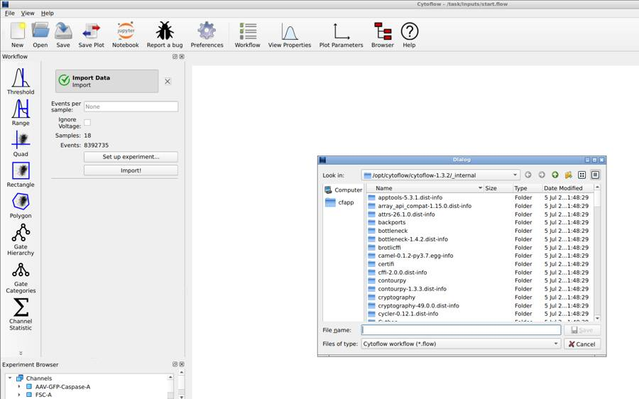
cd /task; cu click 1038 744; cu paste "/task/outputs/workflow.flow"; cu key Return; sleep 3; ls -la outputs; cu screenshot /tmp/screen.png
total 20 drwxrwsrwx 2 agent task 4096 Nov 6 00:35 . drwxr-xr-x 4 root root 4096 Nov 5 22:25 .. -rw-rw-r-- 1 cfapp task 11240 Nov 6 00:35 workflow.flow /tmp/screen.png
{
"file_path": "/tmp/screen.png"
}
cd /task; cu click 652 75; sleep 2; cu screenshot /tmp/screen.png
/tmp/screen.png
{
"file_path": "/tmp/screen.png"
}
cd /task; cu click 652 75; sleep 1; cu click 700 9 double; sleep 2; cu screenshot /tmp/screen.png
/tmp/screen.png
{
"file_path": "/tmp/screen.png"
}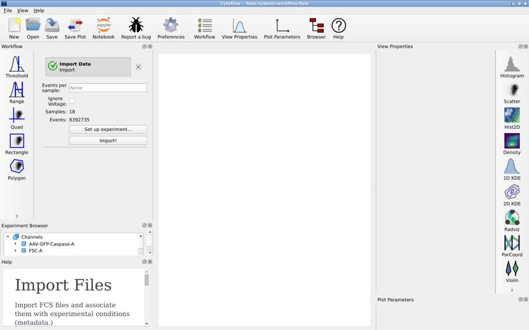
cd /task; cu click 408 713; sleep 1; cu click 1393 180; sleep 2; cu screenshot /tmp/screen.png
/tmp/screen.png
{
"file_path": "/tmp/screen.png"
}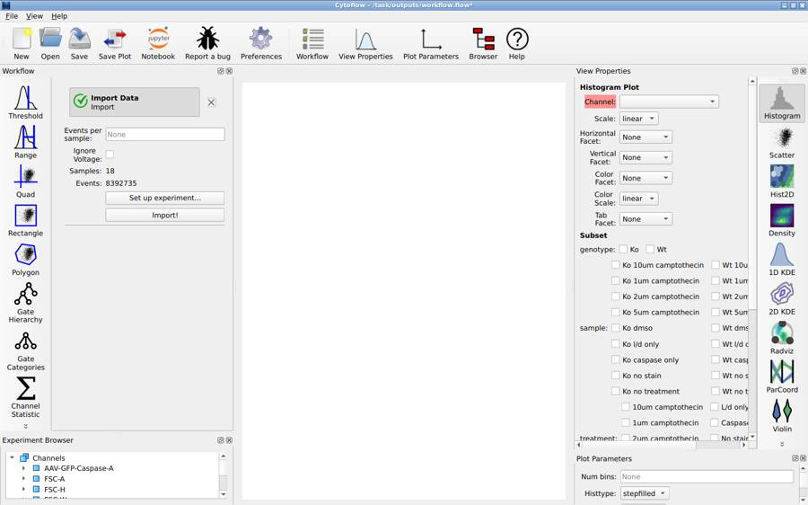
cd /task; cu click 1191 181; sleep 1; cu screenshot /tmp/screen.png
/tmp/screen.png
{
"file_path": "/tmp/screen.png"
}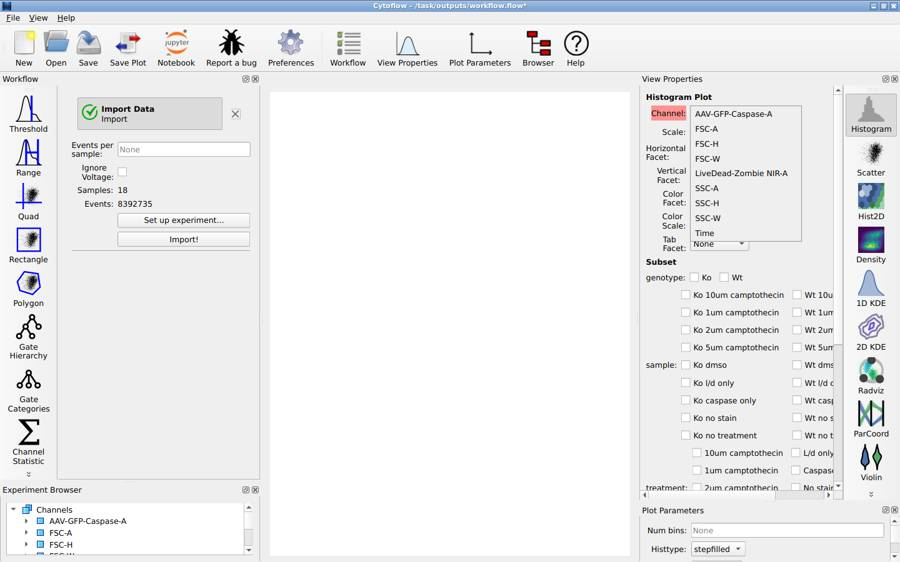
cd /task; cu click 1128 373; sleep 1; cu click 1150 245; sleep 1; cu screenshot /tmp/screen.png
/tmp/screen.png
{
"file_path": "/tmp/screen.png"
}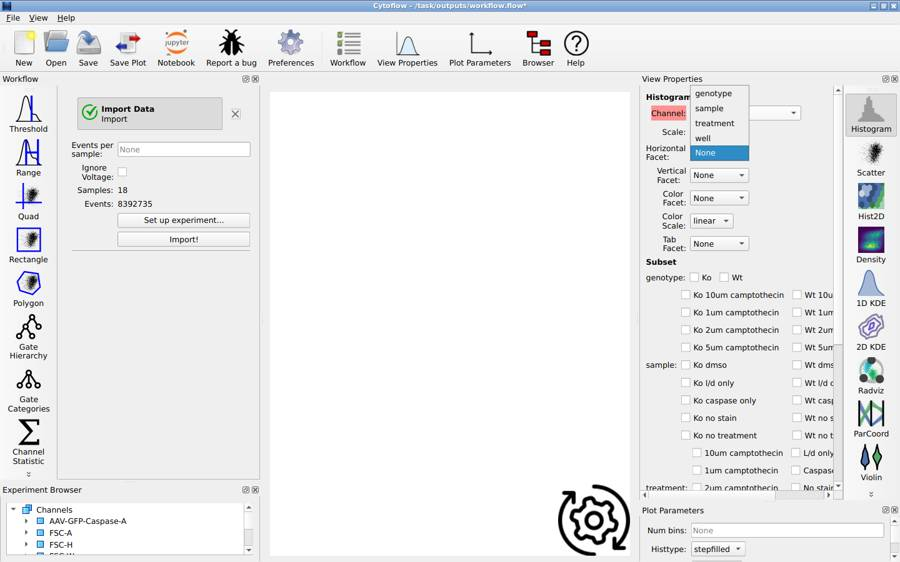
cd /task; cu click 1143 197; sleep 1; cu click 1150 281; sleep 1; cu screenshot /tmp/screen.png
/tmp/screen.png
{
"file_path": "/tmp/screen.png"
}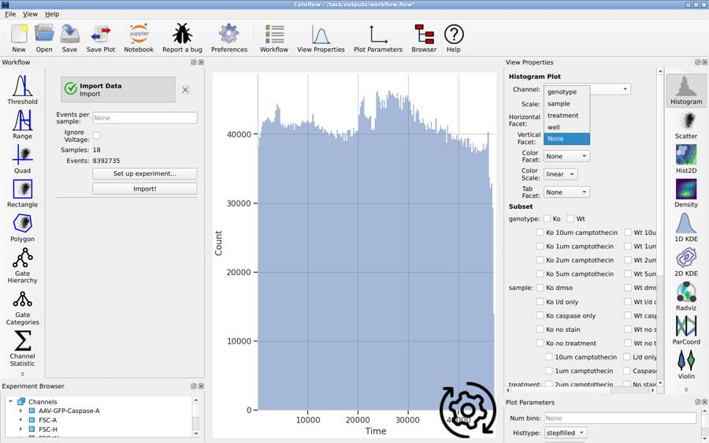
cd /task; cu click 1141 186; sleep 8; cu screenshot /tmp/screen.png
/tmp/screen.png
{
"file_path": "/tmp/screen.png"
}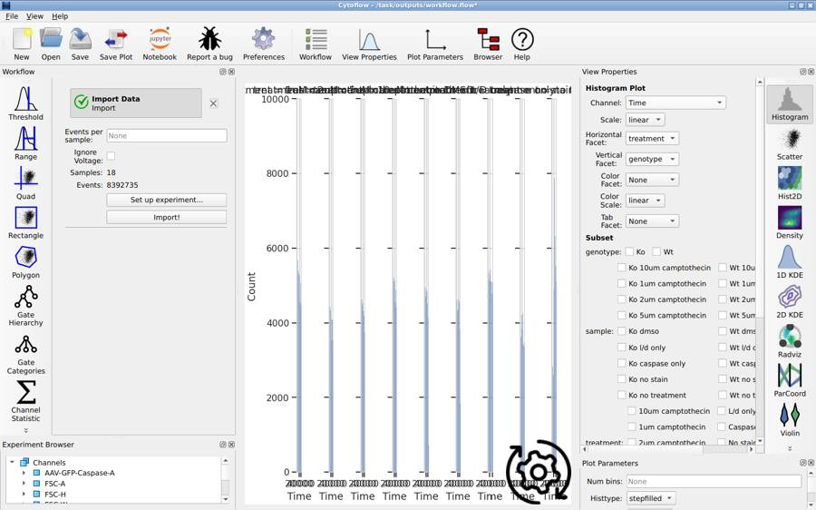
cd /task; cu click 204 75; sleep 2; cu screenshot /tmp/screen.png
/tmp/screen.png
{
"file_path": "/tmp/screen.png"
}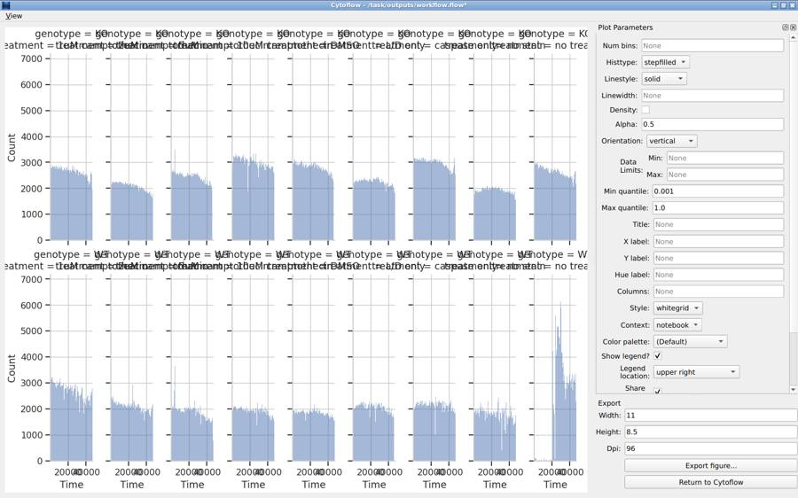
cd /task; cu click 1280 750 triple 2>/dev/null; cu click 1280 750; cu key ctrl+a; cu type "22"; cu click 1280 780; cu key ctrl+a; cu type "9"; cu click 1282 841; sleep 2; cu screenshot /tmp/screen.png
/tmp/screen.png
{
"file_path": "/tmp/screen.png"
}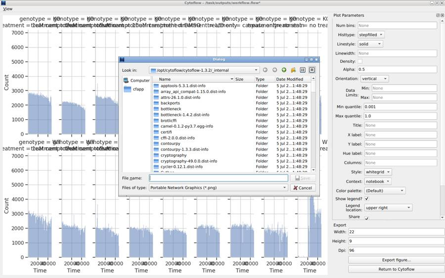
cd /task; cu click 706 576; cu paste "/tmp/time.png"; cu key Return; sleep 5; ls -la /tmp/*.png
-rw-r--r-- 1 root root 223154 Nov 6 00:36 /tmp/screen.png -rw-rw-r-- 1 cfapp cfapp 81569 Nov 6 00:36 /tmp/time.png
{
"file_path": "/tmp/time.png"
}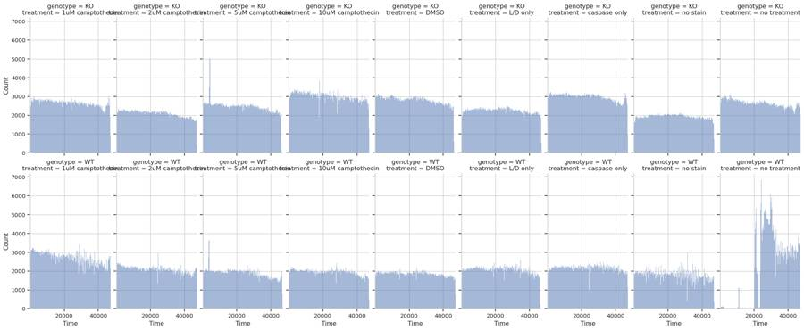
thinking
A12 (the WT no-treatment well) looks clogged, with almost no events for the first ~20 s and then an irregular burst, while the other 17 wells run steadily. I'm checking the FSC vs SSC scatter in Cytoflow next.
cd /task; cu click 1282 871; sleep 2; cu click 1393 390; sleep 2; cu screenshot /tmp/screen.png
/tmp/screen.png
{
"file_path": "/tmp/screen.png"
}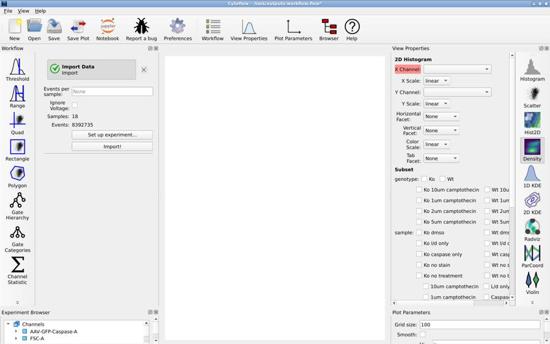
cd /task; cu click 1196 181; sleep 1; cu screenshot /tmp/screen.png
/tmp/screen.png
{
"file_path": "/tmp/screen.png"
}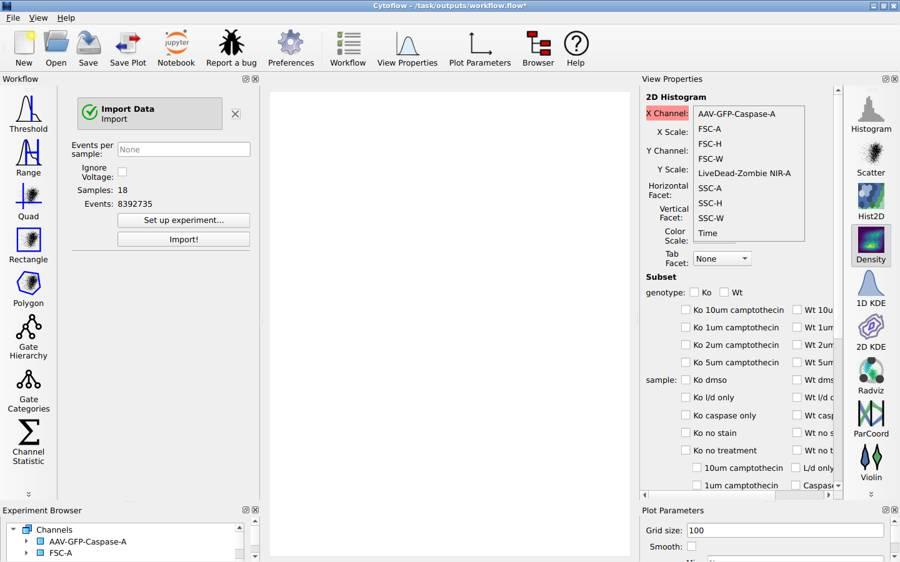
cd /task; cu click 1135 206; sleep 1; cu click 1196 241; sleep 1; cu screenshot /tmp/screen.png
/tmp/screen.png
{
"file_path": "/tmp/screen.png"
}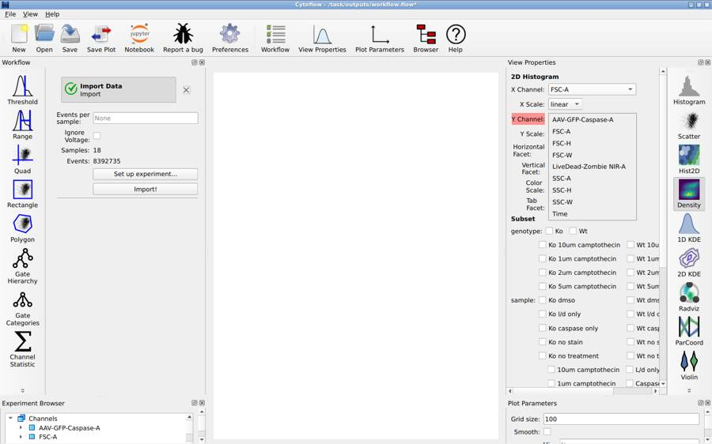
cd /task; cu click 1135 361; sleep 1; cu click 1155 304; sleep 1; cu screenshot /tmp/screen.png
/tmp/screen.png
{
"file_path": "/tmp/screen.png"
}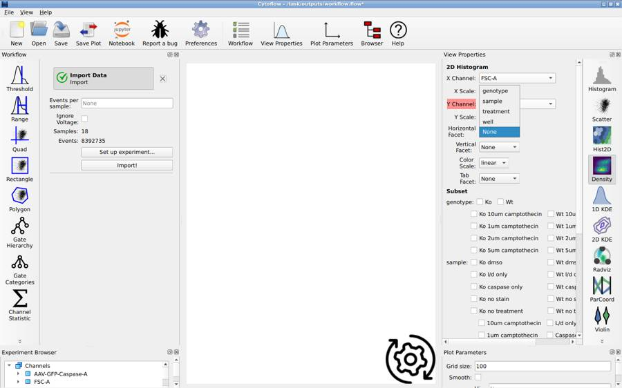
cd /task; cu click 1148 258; sleep 1; cu screenshot /tmp/screen.png
/tmp/screen.png
{
"file_path": "/tmp/screen.png"
}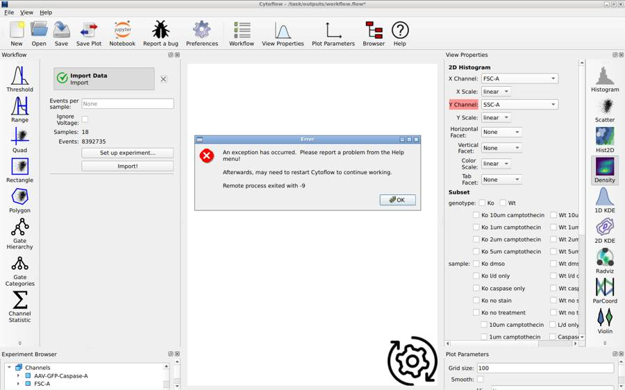
free -m; ps aux --sort=-rss | head -8
total used free shared buff/cache available Mem: 7949 982 6872 15 343 6967 Swap: 0 0 0 USER PID %CPU %MEM VSZ RSS TTY STAT START TIME COMMAND cfapp 838 1.4 5.2 3602248 424236 ? Sl 00:32 0:04 /opt/cytoflow/cytoflow-1.3.2/cytoflow root 1021 1.9 2.6 5684476 214712 ? Sl 00:32 0:05 claude --verbose --output-format=stream-json --effort xhigh --model claude-opus-5-5 --permission-mode=bypassPermissions --print root 815 0.0 0.5 234184 41812 ? S 00:32 0:00 Xvfb :1 -screen 0 1440x900x24 -nolisten tcp root 824 0.0 0.2 58956 23192 ? S 00:32 0:00 /usr/bin/python3 /usr/bin/websockify --web=/usr/share/novnc 6080 localhost:5900 cfapp 859 0.0 0.2 84472 22208 ? S 00:32 0:00 /opt/cytoflow/cytoflow-1.3.2/cytoflow -B -S -I -c from multiprocessing.resource_tracker import main;main(9) cfapp 929 0.0 0.1 5238852 16172 ? Sl 00:32 0:00 /opt/cytoflow/cytoflow-1.3.2/_internal/PyQt5/Qt5/libexec/QtWebEngineProcess --type=zygote --application-name=cytoflow --webengine-schemes=qrc:sLV --lang=en agent 832 0.0 0.1 143092 11752 ? Sl 00:32 0:00 openbox
cd /task; cu click 915 461; sleep 2; cu screenshot /tmp/screen.png; ps aux | grep cytoflow | grep -v grep | awk '{print $2, $6, $11, $12, $13, $14}'/tmp/screen.png 830 324 runuser -u cfapp -- 833 280 /bin/bash /usr/local/bin/start-cytoflow 838 424652 /opt/cytoflow/cytoflow-1.3.2/cytoflow 859 22208 /opt/cytoflow/cytoflow-1.3.2/cytoflow -B -S -I 889 7492 /opt/cytoflow/cytoflow-1.3.2/_internal/PyQt5/Qt5/libexec/QtWebEngineProcess --type=zygote --no-zygote-sandbox --application-name=cytoflow 910 7496 /opt/cytoflow/cytoflow-1.3.2/_internal/PyQt5/Qt5/libexec/QtWebEngineProcess --type=zygote --application-name=cytoflow --webengine-schemes=qrc:sLV 912 7500 /opt/cytoflow/cytoflow-1.3.2/_internal/PyQt5/Qt5/libexec/QtWebEngineProcess --type=zygote --application-name=cytoflow --webengine-schemes=qrc:sLV 929 16172 /opt/cytoflow/cytoflow-1.3.2/_internal/PyQt5/Qt5/libexec/QtWebEngineProcess --type=zygote --application-name=cytoflow --webengine-schemes=qrc:sLV
cat /usr/local/bin/start-cytoflow; dmesg 2>/dev/null | tail -5
#!/bin/bash
# Launch Cytoflow full-screen-ish; restart it if the agent closes it.
BIN=$(find /opt/cytoflow -maxdepth 3 -type f -name 'cytoflow' -perm -u+x | head -1)
[ -z "$BIN" ] && { echo "cytoflow binary not found under /opt/cytoflow"; exit 1; }
while true; do
"$BIN" >/tmp/cytoflow.log 2>&1
sleep 1
done
[ 310.699393] [ 1019] 0 1019 1193 85 83 2 0 45056 0 0 su
[ 310.699481] [ 1020] 0 1020 1191 69 67 2 0 45056 0 0 bash
[ 310.699575] [ 1021] 0 1021 1421119 46152 46150 2 0 1224704 0 0 claude
[ 310.699668] oom-kill:constraint=CONSTRAINT_NONE,nodemask=(null),cpuset=/,mems_allowed=0,global_oom,task_memcg=/,task=cytoflow,pid=861,uid=1002
[ 310.699819] Out of memory: Killed process 861 (cytoflow) total-vm:8840172kB, anon-rss:7245204kB, file-rss:8kB, shmem-rss:28kB, UID:1002 pgtables:14836kB oom_score_adj:0thinking
The kernel killed Cytoflow's worker at 7.2 GB RSS on this 8 GB, swapless machine, so I'm restarting it, reloading the saved workflow, and plotting one well or a subset at a time from now on.
cd /task; cu click 22 29; sleep 1; cu click 48 196; sleep 3; cu screenshot /tmp/screen.png
/tmp/screen.png
{
"file_path": "/tmp/screen.png"
}
cd /task; sleep 15; cu screenshot /tmp/screen.png; ps aux | grep cytoflow | grep -v grep | awk '{print $2, $6, $11, $12, $13}'/tmp/screen.png 830 324 runuser -u cfapp 833 2084 /bin/bash /usr/local/bin/start-cytoflow 859 0 [cytoflow] <defunct> 1386 526060 /opt/cytoflow/cytoflow-1.3.2/cytoflow 1399 39436 /opt/cytoflow/cytoflow-1.3.2/cytoflow -B -S 1401 314548 /opt/cytoflow/cytoflow-1.3.2/cytoflow --multiprocessing-fork tracker_fd=10 1430 47724 /opt/cytoflow/cytoflow-1.3.2/_internal/PyQt5/Qt5/libexec/QtWebEngineProcess --type=zygote --no-zygote-sandbox 1451 48012 /opt/cytoflow/cytoflow-1.3.2/_internal/PyQt5/Qt5/libexec/QtWebEngineProcess --type=zygote --application-name=cytoflow 1453 10936 /opt/cytoflow/cytoflow-1.3.2/_internal/PyQt5/Qt5/libexec/QtWebEngineProcess --type=zygote --application-name=cytoflow 1468 71848 /opt/cytoflow/cytoflow-1.3.2/_internal/PyQt5/Qt5/libexec/QtWebEngineProcess --type=zygote --application-name=cytoflow
{
"file_path": "/tmp/screen.png"
}
cd /task; cu click 700 9 double; sleep 2; cu key ctrl+o; sleep 2; cu screenshot /tmp/screen.png
/tmp/screen.png
{
"file_path": "/tmp/screen.png"
}
cd /task; cu click 706 576; cu paste "/task/outputs/workflow.flow"; cu key Return; sleep 3; cu screenshot /tmp/screen.png
/tmp/screen.png
{
"file_path": "/tmp/screen.png"
}
cd /task; cu click 737 427; sleep 40; cu click 408 713; sleep 1; ps aux | grep cytoflow | grep -v grep | awk '{print $2, $6, $11, $12, $13}' | head -4; free -m | head -2; cu screenshot /tmp/screen.png830 324 runuser -u cfapp
833 2084 /bin/bash /usr/local/bin/start-cytoflow
859 0 [cytoflow] <defunct>
1386 527192 /opt/cytoflow/cytoflow-1.3.2/cytoflow
total used free shared buff/cache available
Mem: 7949 2341 4684 14 1174 5608
/tmp/screen.pngps aux --sort=-rss | grep cytoflow | grep -v grep | awk '{print $2, $6, $11, $12, $13}' | head -41401 1498216 /opt/cytoflow/cytoflow-1.3.2/cytoflow --multiprocessing-fork tracker_fd=10 1386 527192 /opt/cytoflow/cytoflow-1.3.2/cytoflow 1468 71444 /opt/cytoflow/cytoflow-1.3.2/_internal/PyQt5/Qt5/libexec/QtWebEngineProcess --type=zygote --application-name=cytoflow 1451 48012 /opt/cytoflow/cytoflow-1.3.2/_internal/PyQt5/Qt5/libexec/QtWebEngineProcess --type=zygote --application-name=cytoflow
{
"file_path": "/tmp/screen.png"
}
cd /task; cu click 240 180; sleep 1; cu click 1393 390; sleep 2; cu click 1196 181; sleep 1; cu click 1135 206; sleep 1; cu click 1196 241; sleep 1; cu click 1135 361; sleep 1; cu screenshot /tmp/screen.png
/tmp/screen.png
{
"file_path": "/tmp/screen.png"
}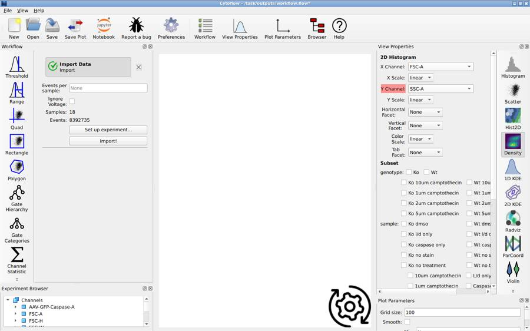
for i in 1 2 3 4 5 6; do ps aux --sort=-rss | grep cytoflow | grep -v grep | awk 'NR==1{print $2, $6}'; sleep 2; done; cu screenshot /tmp/screen.png1401 1506740 1401 1506740 1401 1506740 1401 1506740 1401 1506740 1401 1506740 /tmp/screen.png
{
"file_path": "/tmp/screen.png"
}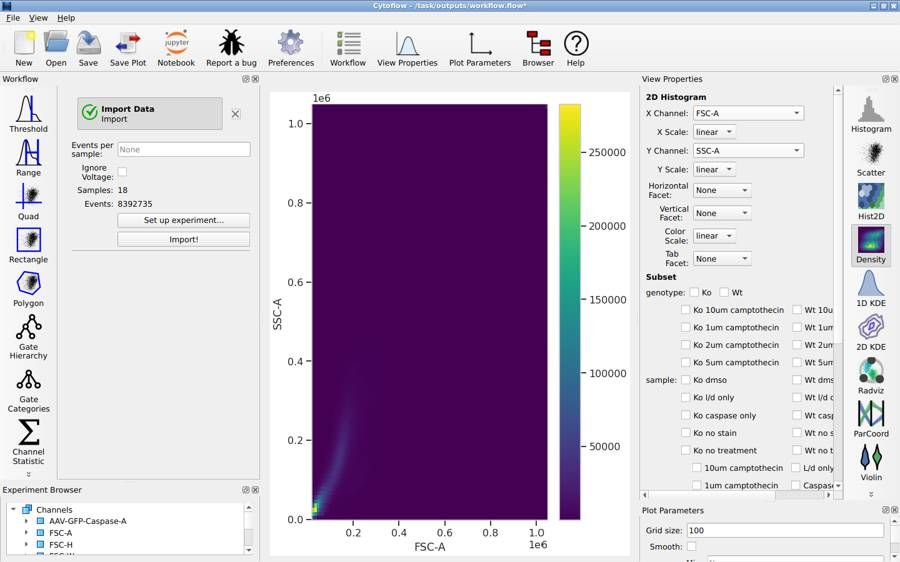
cd /task; cu click 1141 378; sleep 1; cu screenshot /tmp/screen.png
/tmp/screen.png
{
"file_path": "/tmp/screen.png"
}
cd /task; cu click 1127 402; sleep 6; cu screenshot /tmp/screen.png
/tmp/screen.png
{
"file_path": "/tmp/screen.png"
}
cd /task; cu click 1141 211; sleep 1; cu screenshot /tmp/screen.png
/tmp/screen.png
{
"file_path": "/tmp/screen.png"
}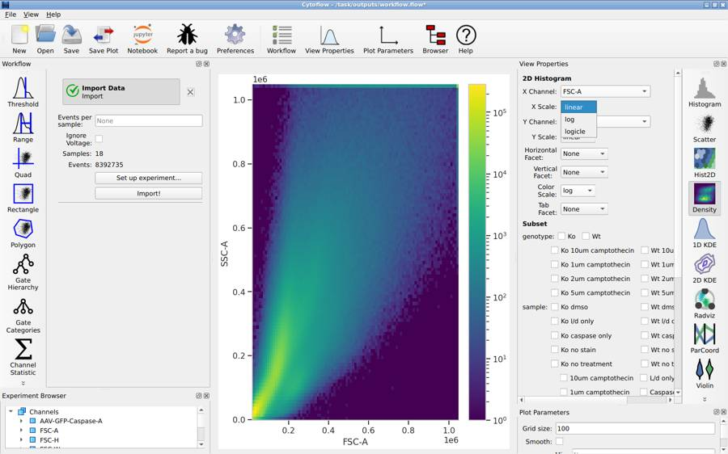
cd /task; cu click 1126 236; sleep 3; cu click 1141 271; sleep 1; cu screenshot /tmp/screen.png
/tmp/screen.png
{
"file_path": "/tmp/screen.png"
}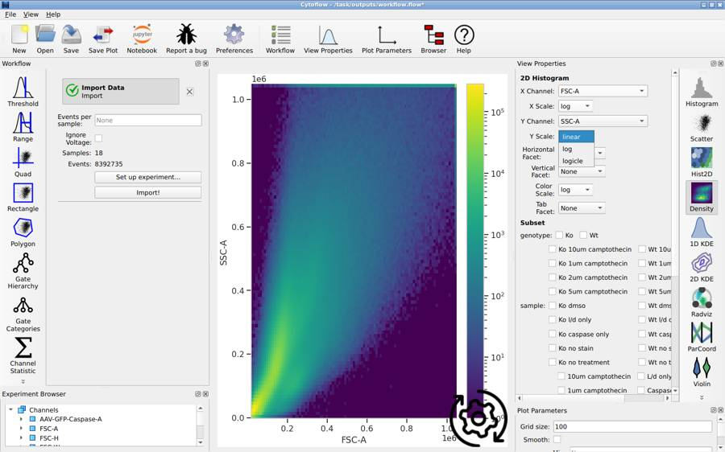
cd /task; cu click 1126 296; sleep 8; cu screenshot /tmp/screen.png
/tmp/screen.png
{
"file_path": "/tmp/screen.png"
}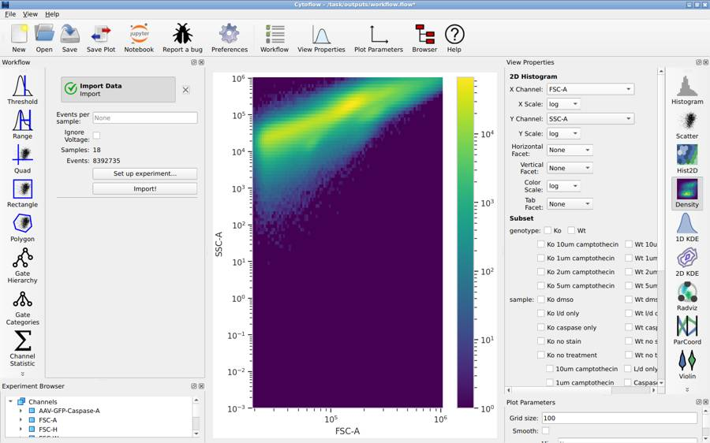
cd /task; cu click 1141 271; sleep 1; cu click 1136 320; sleep 3; cu click 1141 211; sleep 1; cu click 1136 260; sleep 8; cu screenshot /tmp/screen.png
/tmp/screen.png
{
"file_path": "/tmp/screen.png"
}cd /task; cu click 1141 271; sleep 1; cu screenshot /tmp/screen.png
/tmp/screen.png
{
"file_path": "/tmp/screen.png"
}cd /task; cu click 1136 296; sleep 4; cu click 1141 211; sleep 1; cu click 1136 236; sleep 8; cu screenshot /tmp/screen.png
/tmp/screen.png
{
"file_path": "/tmp/screen.png"
}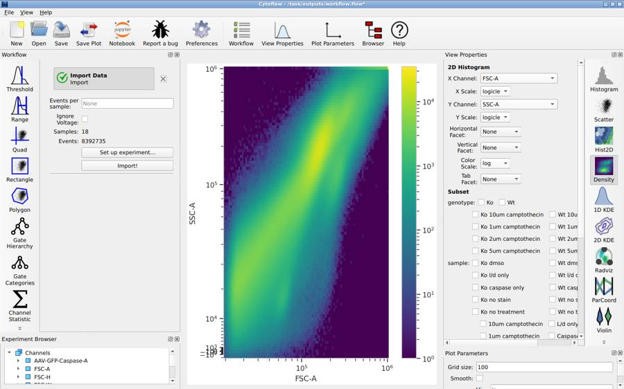
thinking
The logicle scatter shows a dense cell cluster and a smaller debris cluster; I'll check Zombie NIR against FSC to tell which is dead before gating.
cd /task; cu click 1196 241; sleep 1; cu screenshot /tmp/screen.png
/tmp/screen.png
{
"file_path": "/tmp/screen.png"
}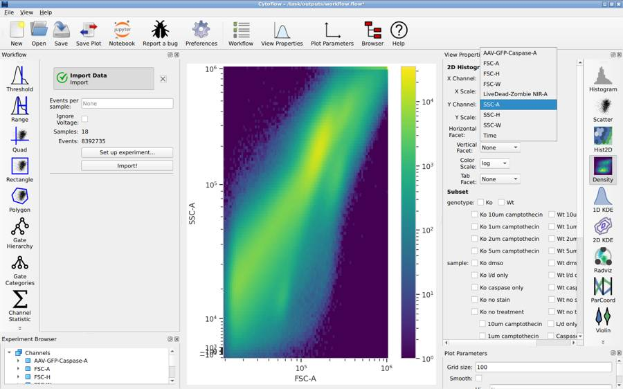
cd /task; cu click 1190 217; sleep 10; cu screenshot /tmp/screen.png
/tmp/screen.png
{
"file_path": "/tmp/screen.png"
}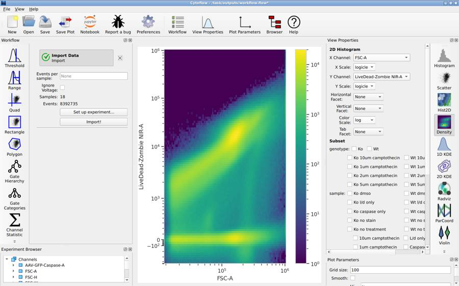
cd /task; cu click 1274 608; sleep 8; cu screenshot /tmp/screen.png
/tmp/screen.png
{
"file_path": "/tmp/screen.png"
}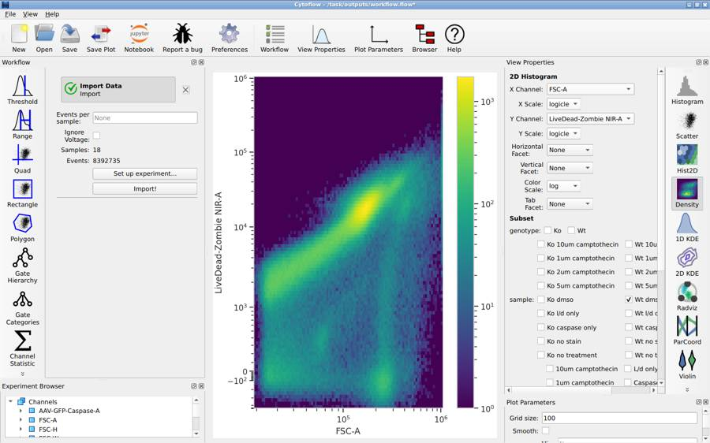
cd /task; cu click 1196 181; sleep 1; cu screenshot /tmp/screen.png
/tmp/screen.png
{
"file_path": "/tmp/screen.png"
}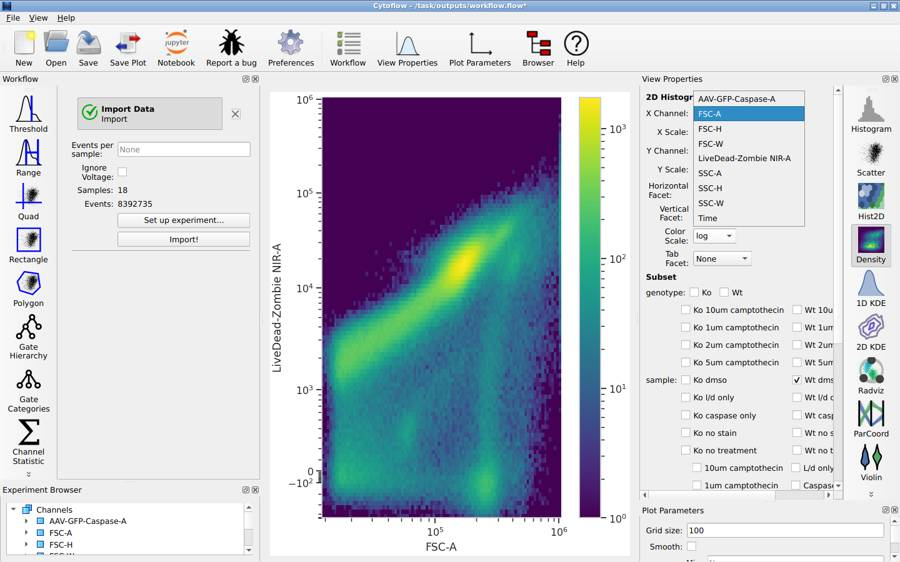
cd /task; cu click 1178 158; sleep 10; cu screenshot /tmp/screen.png
/tmp/screen.png
{
"file_path": "/tmp/screen.png"
}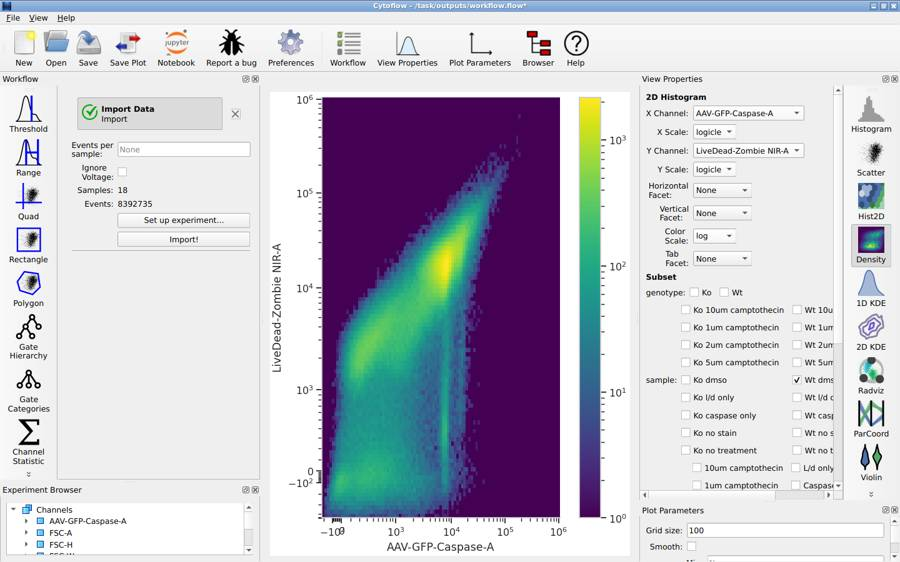
thinking
In WT DMSO, the dead Zombie-bright events are also caspase-bright, while live cells sit mostly at low caspase. Next I'll check the six single-stain and unstained control wells for gating and mislabelling.
cd /task; cu click 1274 608; sleep 1; cu scroll 1180 650 down 5; sleep 1; cu screenshot /tmp/screen.png
/tmp/screen.png
{
"file_path": "/tmp/screen.png"
}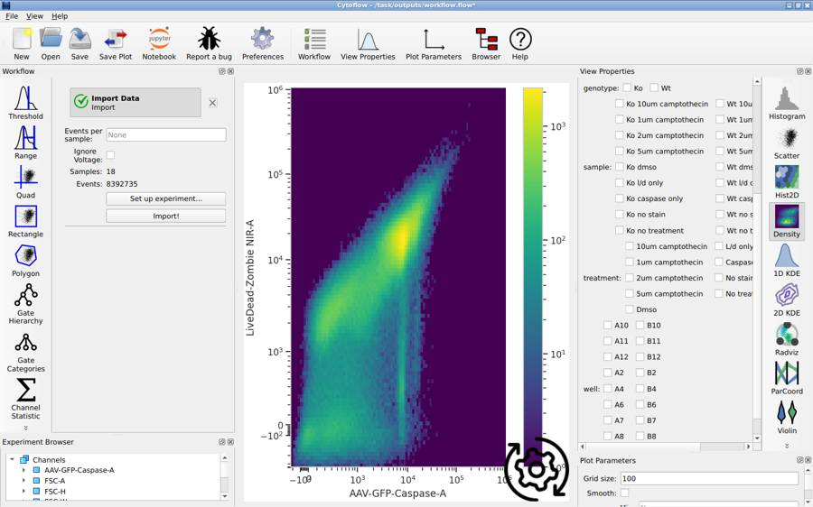
cd /task; sleep 5; for xy in "1076 661" "1076 690" "1076 718" "1133 661" "1133 690" "1133 718"; do cu click $xy; sleep 2; done; sleep 5; cu screenshot /tmp/screen.png; ps aux --sort=-rss | grep cytoflow | grep -v grep | awk 'NR==1{print $2, $6}'/tmp/screen.png 1401 1527096
{
"file_path": "/tmp/screen.png"
}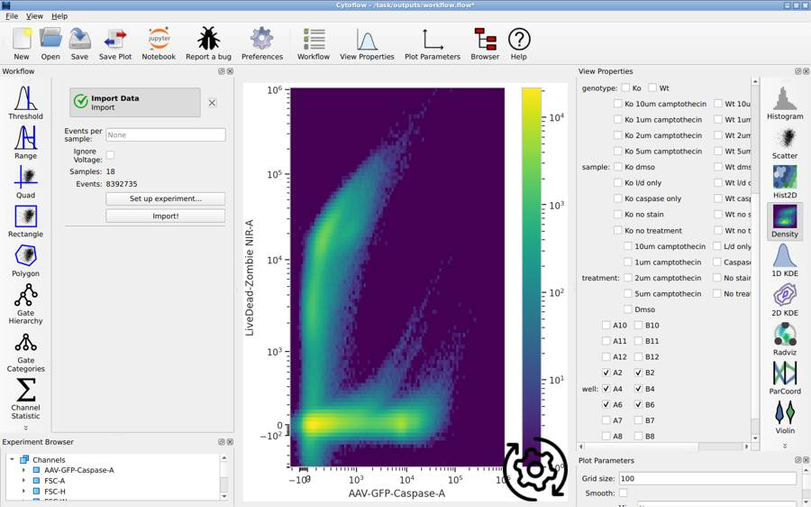
cd /task; cu scroll 1180 400 up 10; sleep 1; cu click 1155 304; sleep 1; cu screenshot /tmp/screen.png
/tmp/screen.png
{
"file_path": "/tmp/screen.png"
}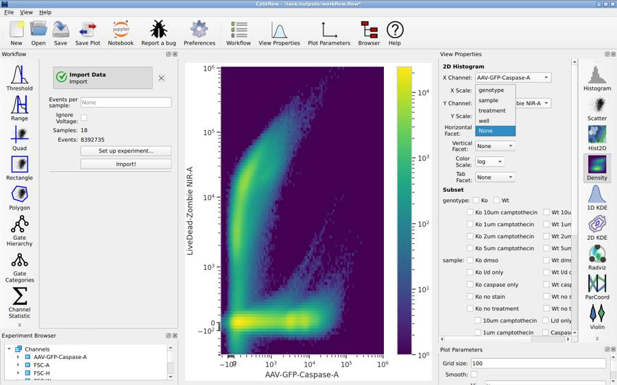
cd /task; cu click 1130 282; for i in 1 2 3 4 5 6 7 8; do sleep 2; ps aux --sort=-rss | grep cytoflow | grep -v grep | awk 'NR==1{printf "%s ", $6}'; done; echo; cu screenshot /tmp/screen.png1443508 1548200 1862212 1608052 1608052 1608052 1608052 1608052 /tmp/screen.png
cd /task; cu click 204 75; sleep 3; cu click 1280 750; cu key ctrl+a; cu type "20"; cu click 1280 780; cu key ctrl+a; cu type "4.5"; cu click 1282 841; sleep 2; cu click 706 576; cu paste "/tmp/ctrl_cz.png"; cu key Return; sleep 6; ls -la /tmp/ctrl_cz.png
-rw-rw-r-- 1 cfapp cfapp 62454 Nov 6 00:45 /tmp/ctrl_cz.png
{
"file_path": "/tmp/ctrl_cz.png"
}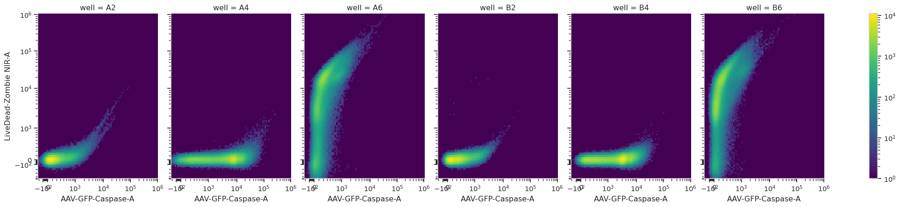
thinking
All six controls match their labels, which rules out a mislabel there, so I'm moving on to the 12 treatment wells.
cd /task; cu click 1282 871; sleep 2; cu scroll 1180 650 down 5; sleep 1; cu screenshot /tmp/screen.png
/tmp/screen.png
{
"file_path": "/tmp/screen.png"
}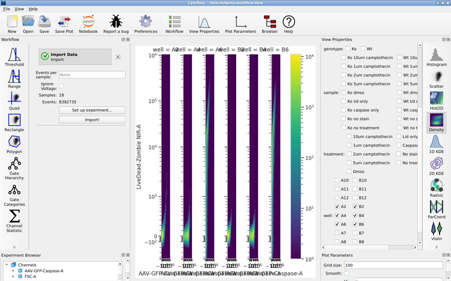
cd /task; for xy in "1076 661" "1076 690" "1076 718" "1133 661" "1133 690" "1133 718"; do cu click $xy; sleep 1.5; done; for xy in "1076 577" "1076 605" "1076 633" "1076 746" "1076 774" "1133 577" "1133 605" "1133 633" "1133 746" "1133 774"; do cu click $xy; sleep 1.5; done; cu scroll 1180 650 down 5; sleep 1; cu screenshot /tmp/screen.png
/tmp/screen.png
{
"file_path": "/tmp/screen.png"
}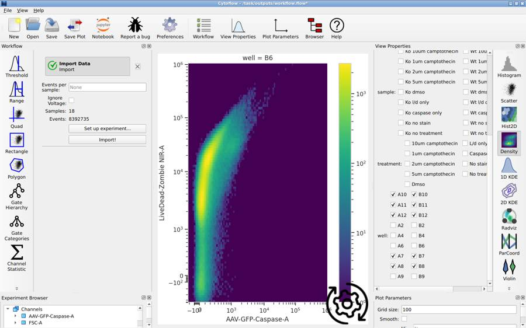
cd /task; cu click 1076 758; sleep 1.5; cu click 1133 758; for i in $(seq 1 12); do sleep 2; ps aux --sort=-rss | grep cytoflow | grep -v grep | awk 'NR==1{printf "%s ", $6}'; done; echo; cu screenshot /tmp/screen.png1438212 1438212 1746260 1813564 1438276 1438276 1438276 1779716 1915564 1832472 1491300 1491300 /tmp/screen.png
{
"file_path": "/tmp/screen.png"
}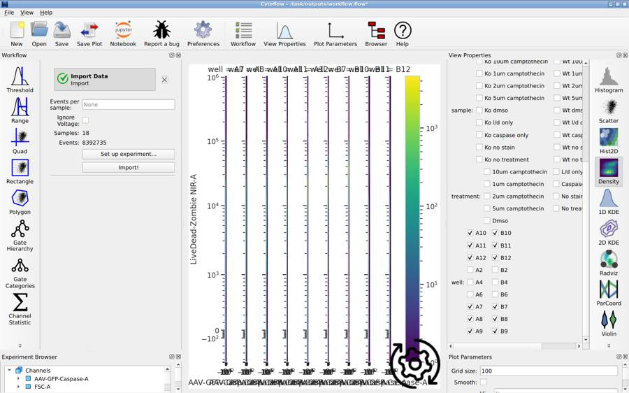
cd /task; sleep 8; cu click 204 75; sleep 3; cu screenshot /tmp/screen.png
/tmp/screen.png
{
"file_path": "/tmp/screen.png"
}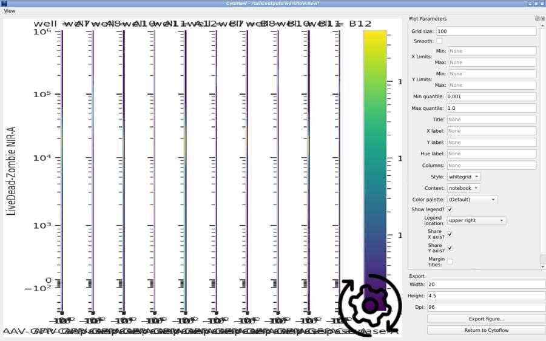
cd /task; cu click 1295 436; cu type "6"; cu key Return; sleep 2; cu click 1280 780; cu key ctrl+a; cu type "9"; cu key Return; sleep 12; cu screenshot /tmp/screen.png; ps aux --sort=-rss | grep cytoflow | grep -v grep | awk 'NR==1{printf "%s ", $6}'/tmp/screen.png 1451512
cd /task; cu click 1282 841; sleep 2; cu click 706 576; cu paste "/tmp/treat_cz.png"; cu key Return; sleep 8; ls -la /tmp/treat_cz.png
-rw-rw-r-- 1 cfapp cfapp 201642 Nov 6 00:47 /tmp/treat_cz.png
{
"file_path": "/tmp/treat_cz.png"
}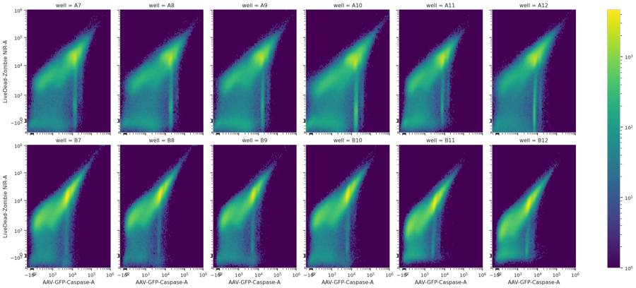
thinking
Treatment wells show a vertical streak at a fixed caspase level (about 1e4 in WT, 5e3 in KO) running from Zombie− to Zombie+, which fits CellEvent binding cleaved nuclear DNA. I'm checking FSC/SSC per well next to place the cell gate.
cd /task; cu click 1282 871; sleep 2; cu scroll 1180 400 up 10; sleep 1; cu click 1196 181; sleep 1; cu screenshot /tmp/screen.png
/tmp/screen.png
{
"file_path": "/tmp/screen.png"
}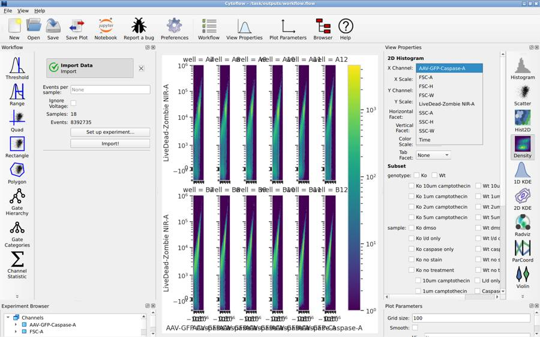
cd /task; cu click 1135 206; sleep 4; cu click 1196 241; sleep 1; cu screenshot /tmp/screen.png
/tmp/screen.png
{
"file_path": "/tmp/screen.png"
}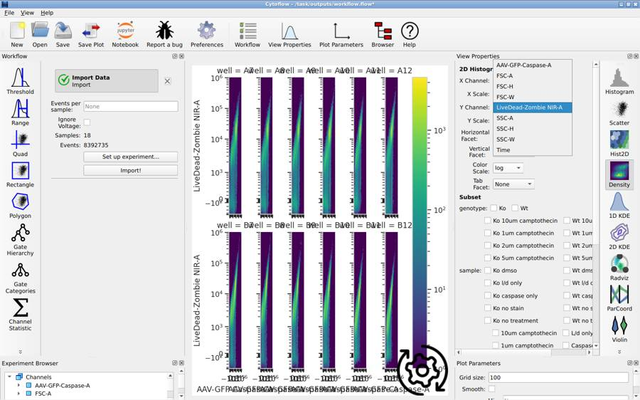
cd /task; cu key Escape; sleep 15; cu click 204 75; sleep 3; cu click 1282 841; sleep 2; cu click 706 576; cu paste "/tmp/treat_fz.png"; cu key Return; sleep 8; ls -la /tmp/treat_fz.png
-rw-rw-r-- 1 cfapp cfapp 262487 Nov 6 00:49 /tmp/treat_fz.png
{
"file_path": "/tmp/treat_fz.png"
}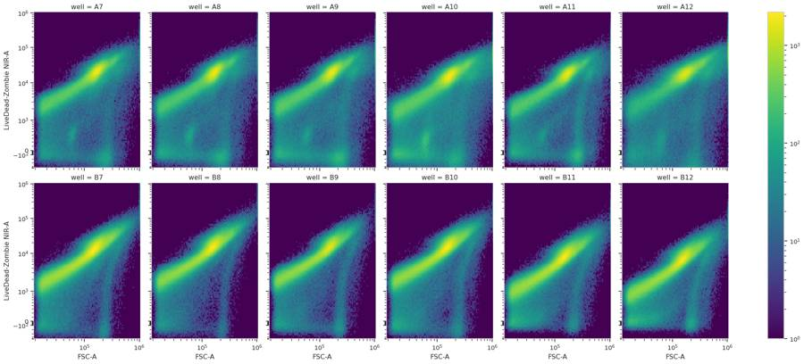
thinking
Live cells (Zombie ~0) sit at FSC ~2–3e5 in every well, with a small low-Zombie spot near 6e4 and negative debris below 5e4. I'm plotting FSC-A against caspase next to see what the caspase streak is.
cd /task; cu click 1282 871; sleep 2; cu click 1196 241; sleep 1; cu click 1178 146; sleep 15; cu click 204 75; sleep 3; cu click 1282 841; sleep 2; cu click 706 576; cu paste "/tmp/treat_fc.png"; cu key Return; sleep 8; ls -la /tmp/treat_fc.png
-rw-rw-r-- 1 cfapp cfapp 232207 Nov 6 00:49 /tmp/treat_fc.png
{
"file_path": "/tmp/treat_fc.png"
}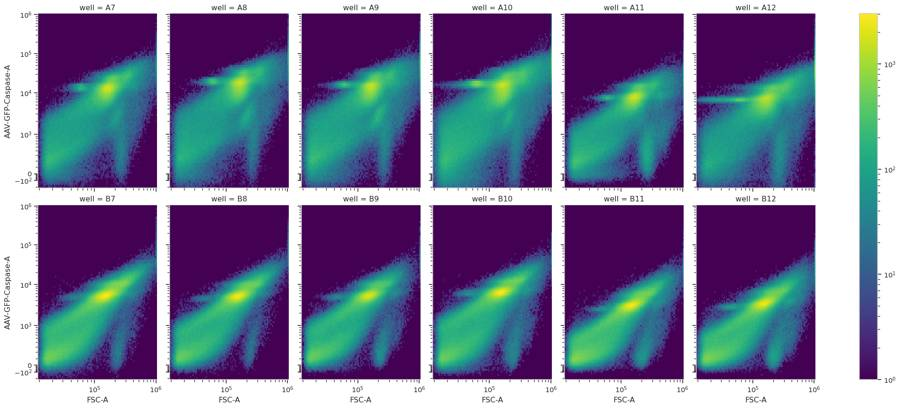
thinking
The caspase streak is mostly small low-FSC events, likely apoptotic bodies or DNA-dye-bearing nuclei, so an FSC-based gate would remove them. I'm plotting FSC against SSC per well next.
cd /task; cu click 1282 871; sleep 2; cu click 1196 241; sleep 1; cu screenshot /tmp/screen.png
/tmp/screen.png
{
"file_path": "/tmp/screen.png"
}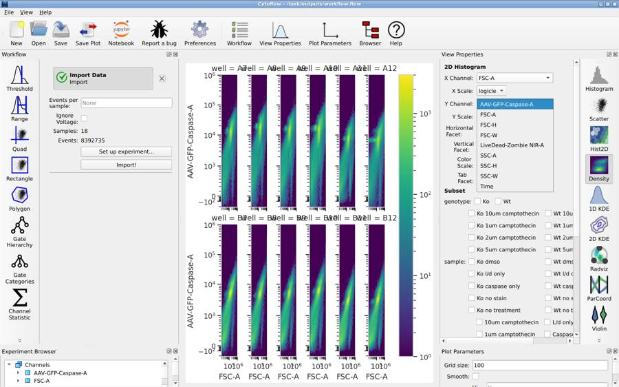
cd /task; cu click 1135 361; sleep 15; cu click 204 75; sleep 3; cu click 1282 841; sleep 2; cu click 706 576; cu paste "/tmp/treat_fs.png"; cu key Return; sleep 8; ls -la /tmp/treat_fs.png
-rw-rw-r-- 1 cfapp cfapp 220134 Nov 6 00:51 /tmp/treat_fs.png
{
"file_path": "/tmp/treat_fs.png"
}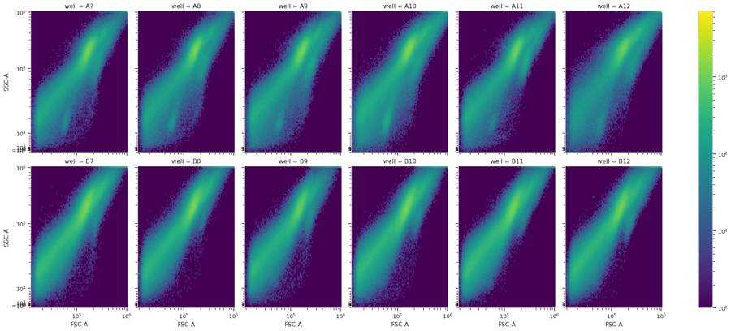
thinking
Debris sits below FSC ~8e4 and a few events are saturated, so I'm gating out both with a rectangular 'cells' gate and watching memory as each gate is added.
cd /task; cu click 1282 871; sleep 2; cu click 240 180; sleep 1; cu click 45 390; sleep 3; cu screenshot /tmp/screen.png
/tmp/screen.png
{
"file_path": "/tmp/screen.png"
}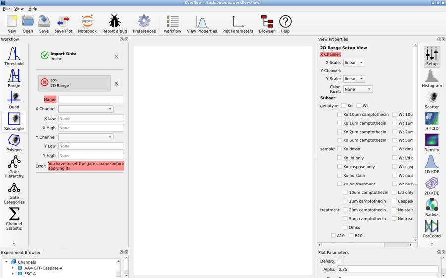
cd /task; cu click 1274 482; sleep 1; cu click 294 322; cu type "cells"; cu key Tab; sleep 1; cu click 278 352; sleep 1; cu screenshot /tmp/screen.png
/tmp/screen.png
{
"file_path": "/tmp/screen.png"
}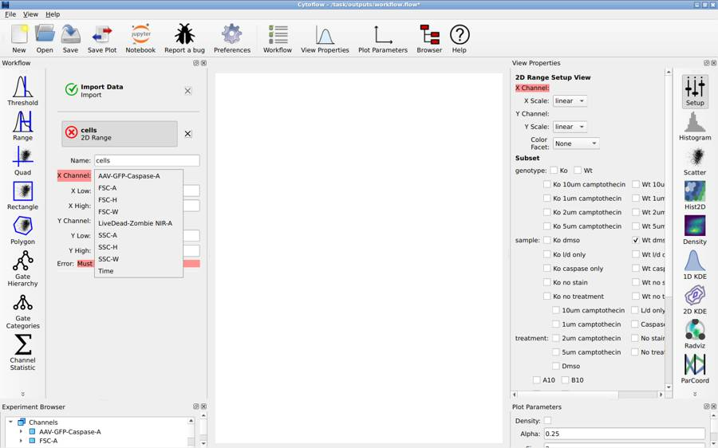
cd /task; cu click 215 377; sleep 1; cu click 278 443; sleep 1; cu screenshot /tmp/screen.png
/tmp/screen.png
{
"file_path": "/tmp/screen.png"
}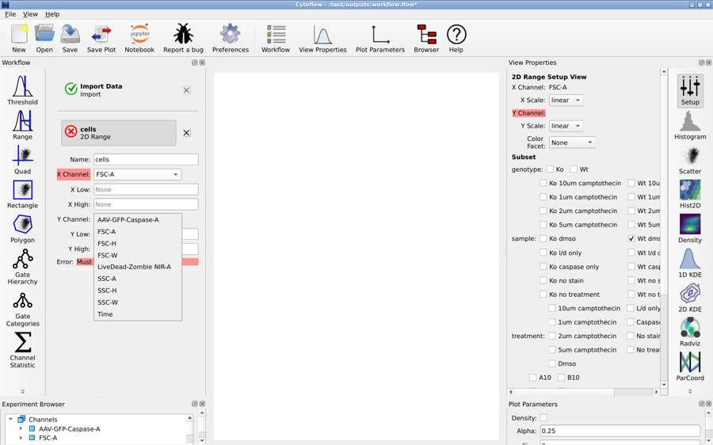
cd /task; cu click 215 563; sleep 1; cu click 294 383; cu key ctrl+a; cu type "100000"; cu key Tab; sleep 1; cu click 294 413; cu key ctrl+a; cu type "1045000"; cu key Tab; sleep 1; cu click 294 473; cu key ctrl+a; cu type "20000"; cu key Tab; sleep 1; cu click 294 503; cu key ctrl+a; cu type "1045000"; cu key Tab; sleep 3; cu screenshot /tmp/screen.png
/tmp/screen.png
{
"file_path": "/tmp/screen.png"
}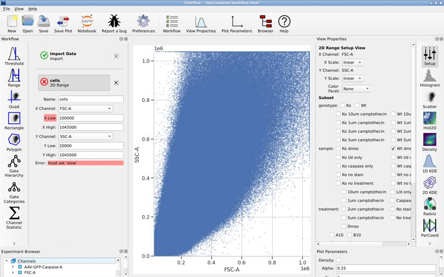
cd /task; cu click 294 383; cu key End; cu key Return; sleep 3; cu screenshot /tmp/screen.png
/tmp/screen.png
{
"file_path": "/tmp/screen.png"
}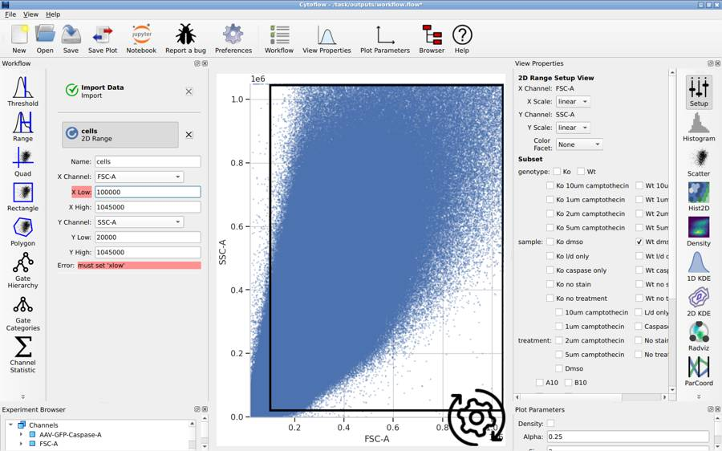
cd /task; for i in $(seq 1 10); do sleep 2; ps aux --sort=-rss | grep cytoflow | grep -v grep | awk 'NR==1{printf "%s ", $6}'; done; echo; cu screenshot /tmp/screen.png6018320 1736792 1736792 1736792 1736792 1736792 1736792 1736792 1736792 1736792 /tmp/screen.png
{
"file_path": "/tmp/screen.png"
}cd /task; cu click 1141 202; sleep 1; cu screenshot /tmp/screen.png
/tmp/screen.png
{
"file_path": "/tmp/screen.png"
}cd /task; cu click 1136 252; sleep 3; cu click 1141 254; sleep 1; cu screenshot /tmp/screen.png
/tmp/screen.png
{
"file_path": "/tmp/screen.png"
}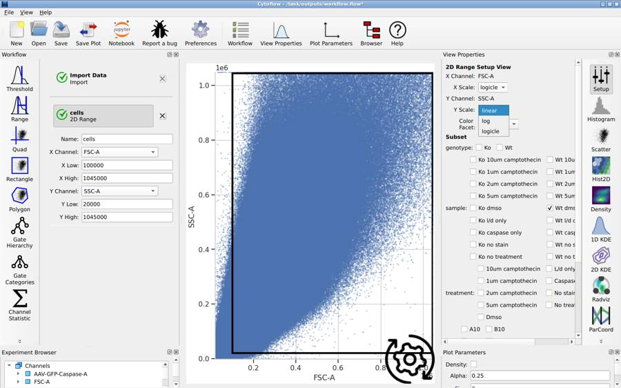
cd /task; cu click 1136 304; sleep 12; cu screenshot /tmp/screen.png
/tmp/screen.png
{
"file_path": "/tmp/screen.png"
}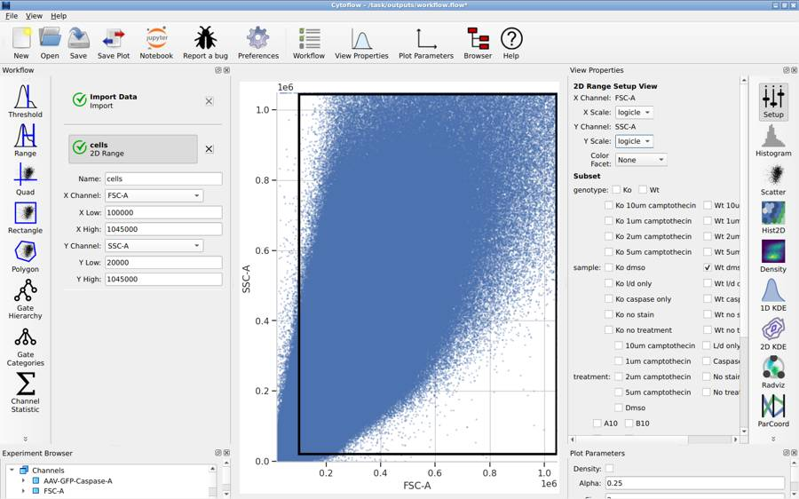
cd /task; sleep 10; cu screenshot /tmp/screen.png; ps aux --sort=-rss | grep cytoflow | grep -v grep | awk 'NR<=2{printf "%s %s %s\n", $2, $6, $3}'/tmp/screen.png 1401 1738828 34.6 1386 413392 0.6
{
"file_path": "/tmp/screen.png"
}
cd /task; cu click 240 268; sleep 1; cu click 45 460; sleep 3; cu screenshot /tmp/screen.png
/tmp/screen.png
{
"file_path": "/tmp/screen.png"
}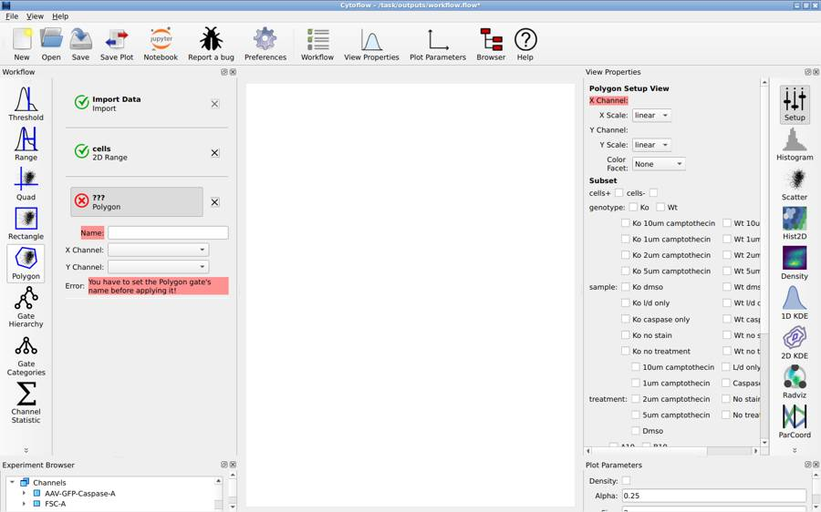
cd /task; cu click 1085 339; sleep 1; cu click 1274 504; sleep 1; cu click 294 409; cu type "singlets"; cu key Return; sleep 1; cu click 278 439; sleep 1; cu screenshot /tmp/screen.png
/tmp/screen.png
{
"file_path": "/tmp/screen.png"
}cd /task; cu click 215 464; sleep 1; cu click 278 469; sleep 1; cu screenshot /tmp/screen.png
/tmp/screen.png
{
"file_path": "/tmp/screen.png"
}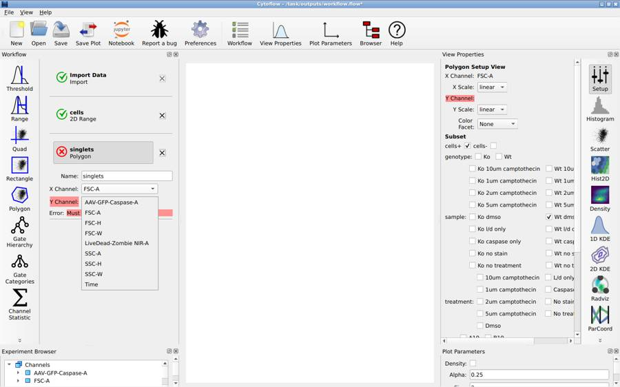
cd /task; cu click 215 518; sleep 15; cu screenshot /tmp/screen.png
/tmp/screen.png
{
"file_path": "/tmp/screen.png"
}cd /task; cu click 240 268; sleep 1; cu click 1393 455; sleep 2; cu screenshot /tmp/screen.png
/tmp/screen.png
{
"file_path": "/tmp/screen.png"
}cd /task; cu click 1085 465; sleep 1; cu click 1196 181; sleep 1; cu click 1135 206; sleep 1; cu click 1196 241; sleep 1; cu screenshot /tmp/screen.png
/tmp/screen.png
{
"file_path": "/tmp/screen.png"
}cd /task; cu click 1135 290; sleep 2; cu click 1141 378; sleep 1; cu click 1127 402; sleep 2; cu click 1155 341; sleep 1; cu screenshot /tmp/screen.png
/tmp/screen.png
{
"file_path": "/tmp/screen.png"
}cd /task; cu click 1146 246; sleep 20; cu screenshot /tmp/screen.png; ps aux --sort=-rss | grep cytoflow | grep -v grep | awk 'NR==1{printf "%s\n", $6}'/tmp/screen.png 1601108
{
"file_path": "/tmp/screen.png"
}cd /task; cu click 204 75; sleep 3; cu screenshot /tmp/screen.png
/tmp/screen.png
{
"file_path": "/tmp/screen.png"
}cd /task; cu click 1297 164; cu type "600000"; cu key Return; sleep 1; cu click 1297 224; cu type "350000"; cu key Return; sleep 1; cu click 1297 194; cu type "0"; cu key Return; sleep 1; cu click 1297 134; cu type "50000"; cu key Return; sleep 1; cu click 1282 82; cu key ctrl+a; cu type "200"; cu key Return; sleep 15; cu click 1282 841; sleep 2; cu click 706 576; cu paste "/tmp/singlets1.png"; cu key Return; sleep 8; ls -la /tmp/singlets1.png
-rw-rw-r-- 1 cfapp cfapp 130349 Nov 6 00:57 /tmp/singlets1.png
{
"file_path": "/tmp/singlets1.png"
}thinking
The singlet band runs up the upper diagonal and doublets sit below it, with aggregates above FSC-A ~4e5, so the live cells at 2–3e5 need a gate reaching ~4.5e5. I'm drawing that polygon next.
cd /task; cu click 1282 871; sleep 2; cu click 240 566; sleep 15; cu screenshot /tmp/screen.png
/tmp/screen.png
{
"file_path": "/tmp/screen.png"
}cd /task; cu click 569 714; sleep 0.7; cu click 617 657; sleep 0.7; cu click 663 606; sleep 0.7; cu click 731 554; sleep 0.7; cu click 731 685; sleep 0.7; cu click 663 708; sleep 0.7; cu click 617 739; sleep 0.7; cu click 569 782 double; sleep 3; cu screenshot /tmp/screen.png
/tmp/screen.png
{
"file_path": "/tmp/screen.png"
}cd /task; cu click 569 714; sleep 3; cu screenshot /tmp/screen.png
/tmp/screen.png
{
"file_path": "/tmp/screen.png"
}cd /task; for i in $(seq 1 12); do sleep 2; ps aux --sort=-rss | grep cytoflow | grep -v grep | awk 'NR==1{printf "%s ", $6}'; done; echo; free -m | head -2; cu screenshot /tmp/screen.png1557944 1557944 1557944 1557944 1557944 1557944 1557944 1557944 1557944 1557944 1557944 1557944
total used free shared buff/cache available
Mem: 7949 2510 5022 15 673 5439
/tmp/screen.png{
"file_path": "/tmp/screen.png"
}cd /task; cu key ctrl+s; sleep 3; ls -la outputs; grep -n -A40 "polygon" outputs/workflow.flow | head -60
total 44 drwxrwsrwx 2 agent task 4096 Nov 6 00:35 . drwxr-xr-x 4 root root 4096 Nov 5 22:25 .. -rw-rw-r-- 1 cfapp task 35423 Nov 6 00:59 workflow.flow 1433: current_view: &id007 !polygon-view;3 1434- current_plot: null 1435- huefacet: '' 1436- huescale: linear 1437: op: &id006 !polygon;1 1438- name: singlets 1439- vertices: 1440- - !!python/tuple 1441- - 95480.38099764031 1442- - 129627.65468064371 1443- - !!python/tuple 1444- - 200660.03921594005 1445- - 179799.4156356235 1446- - !!python/tuple 1447- - 301266.6688160529 1448- - 224497.89357733284 1449- - !!python/tuple 1450- - 449890.0989071286 1451- - 270108.5853545872 1452- - !!python/tuple 1453- - 449890.0989071286 1454- - 155169.64207590616 1455- - !!python/tuple 1456- - 301266.6688160529 1457- - 135100.93769391422 1458- - !!python/tuple 1459- - 200660.03921594005 1460- - 107734.5226275616 1461- - !!python/tuple 1462- - 95480.38099764031 1463- - 70333.75537021301 1464- - !!python/tuple 1465- - 95480.38099764031 1466- - 70333.75537021301 1467- xchannel: FSC-A 1468- xscale: linear 1469- ychannel: FSC-H 1470- yscale: linear 1471: plot_params: !polygon-params;1 1472- alpha: 0.25 1473- col_wrap: null 1474- density: false 1475- despine: true 1476- gridsize: 50 1477- huelabel: '' 1478- legend: true 1479- marker: o 1480- max_quantile: 1.0 1481- min_quantile: 0.001 1482- s: 2 1483- sharex: true 1484- sharey: true 1485- smoothed: false 1486- smoothed_sigma: 1.0 1487- sns_context: notebook 1488- sns_style: whitegrid 1489- title: '' 1490- xlabel: '' 1491- xlim: *id003 1492- ylabel: ''
cd /task; cu click 1393 250; sleep 2; cu screenshot /tmp/screen.png
/tmp/screen.png
{
"file_path": "/tmp/screen.png"
}cd /task; cu click 1085 441; sleep 1; cu click 1106 744; sleep 1; cu click 1191 181; sleep 1; cu click 1185 277; sleep 1; cu click 1137 211; sleep 1; cu screenshot /tmp/screen.png
/tmp/screen.png
{
"file_path": "/tmp/screen.png"
}cd /task; cu click 1132 260; sleep 3; cu click 1150 317; sleep 1; cu screenshot /tmp/screen.png
/tmp/screen.png
{
"file_path": "/tmp/screen.png"
}cd /task; cu click 1124 293; sleep 25; cu click 204 75; sleep 3; cu click 1282 841; sleep 2; cu click 706 576; cu paste "/tmp/zombie_hist.png"; cu key Return; sleep 8; ls -la /tmp/zombie_hist.png
-rw-rw-r-- 1 cfapp cfapp 41465 Nov 6 01:00 /tmp/zombie_hist.png
{
"file_path": "/tmp/zombie_hist.png"
}cd /task; cu click 1282 871; sleep 2; cu click 240 355; sleep 1; cu click 45 250; sleep 3; cu screenshot /tmp/screen.png
/tmp/screen.png
{
"file_path": "/tmp/screen.png"
}cd /task; cu click 1106 590; sleep 1; cu click 288 495; cu type "live"; cu key Return; sleep 1; cu click 265 525; sleep 1; cu screenshot /tmp/screen.png
/tmp/screen.png
{
"file_path": "/tmp/screen.png"
}cd /task; cu click 258 621; sleep 1; cu click 288 555; cu key ctrl+a; cu type "-100000"; cu key Tab; sleep 1; cu click 288 585; cu key ctrl+a; cu type "1000"; cu key Return; sleep 3; cu screenshot /tmp/screen.png
/tmp/screen.png
{
"file_path": "/tmp/screen.png"
}cd /task; for i in $(seq 1 10); do sleep 2; ps aux --sort=-rss | grep cytoflow | grep -v grep | awk 'NR==1{printf "%s ", $6}'; done; echo; cu click 1131 202; sleep 1; cu screenshot /tmp/screen.png1611736 4325164 1572596 1572596 1572596 1572596 1572596 1572596 1572596 1572596 /tmp/screen.png
{
"file_path": "/tmp/screen.png"
}cd /task; cu click 1124 252; sleep 15; cu key ctrl+s; sleep 2; cu screenshot /tmp/screen.png
/tmp/screen.png
{
"file_path": "/tmp/screen.png"
}cd /task; cu click 1393 250; sleep 2; cu screenshot /tmp/screen.png
/tmp/screen.png
{
"file_path": "/tmp/screen.png"
}cd /task; cu click 1393 455; sleep 2; cu screenshot /tmp/screen.png
/tmp/screen.png
{
"file_path": "/tmp/screen.png"
}cd /task; cu click 1196 181; sleep 1; cu click 1178 206; sleep 1; cu click 1141 211; sleep 1; cu click 1136 260; sleep 1; cu click 1196 241; sleep 1; cu screenshot /tmp/screen.png
/tmp/screen.png
{
"file_path": "/tmp/screen.png"
}cd /task; cu key Escape; sleep 1; cu scroll 1180 600 down 5; sleep 1; cu screenshot /tmp/screen.png
/tmp/screen.png
{
"file_path": "/tmp/screen.png"
}cd /task; cu click 1106 477; sleep 2; cu scroll 1180 400 up 10; sleep 1; cu click 1196 241; sleep 1; cu screenshot /tmp/screen.png
/tmp/screen.png
{
"file_path": "/tmp/screen.png"
}cd /task; cu click 1190 337; sleep 15; cu click 1196 181; sleep 1; cu screenshot /tmp/screen.png
/tmp/screen.png
{
"file_path": "/tmp/screen.png"
}cd /task; cu click 1178 158; sleep 12; cu click 1141 271; sleep 1; cu screenshot /tmp/screen.png
/tmp/screen.png
{
"file_path": "/tmp/screen.png"
}cd /task; cu click 1136 320; sleep 12; cu click 1141 378; sleep 1; cu click 1127 402; sleep 12; cu click 1155 304; sleep 1; cu screenshot /tmp/screen.png
/tmp/screen.png
{
"file_path": "/tmp/screen.png"
}cd /task; cu click 1130 281; for i in $(seq 1 15); do sleep 2; ps aux --sort=-rss | grep cytoflow | grep -v grep | awk 'NR==1{printf "%s ", $6}'; done; echo; cu click 204 75; sleep 3; cu click 1282 841; sleep 2; cu click 706 576; cu paste "/tmp/sing_cz.png"; cu key Return; sleep 10; ls -la /tmp/sing_cz.png1596820 1886420 1906032 1906580 1970552 1969728 1969728 1969728 1969728 1969728 1969728 1969728 1969728 1969728 1969728 -rw-rw-r-- 1 cfapp cfapp 122964 Nov 6 01:05 /tmp/sing_cz.png
{
"file_path": "/tmp/sing_cz.png"
}cd /task; cu click 1295 436; cu key ctrl+a; cu type "6"; cu key Return; sleep 2; cu click 1280 780; cu key ctrl+a; cu type "12"; cu key Return; sleep 20; cu click 1282 841; sleep 2; cu click 706 576; cu paste "/tmp/sing_cz.png"; cu key Return; sleep 3; cu screenshot /tmp/screen.png
/tmp/screen.png
{
"file_path": "/tmp/screen.png"
}cd /task; cu click 680 419; sleep 10; ls -la /tmp/sing_cz.png
-rw-rw-r-- 1 cfapp cfapp 224424 Nov 6 01:06 /tmp/sing_cz.png
{
"file_path": "/tmp/sing_cz.png"
}cd /task; cu click 1282 871; sleep 2; cu click 1393 250; sleep 2; cu screenshot /tmp/screen.png
/tmp/screen.png
{
"file_path": "/tmp/screen.png"
}cd /task; cu click 1085 441; sleep 1; cu click 1081 491; sleep 1; cu click 1106 766; sleep 1; cu click 1191 181; sleep 1; cu click 1185 206; sleep 2; cu click 1137 211; sleep 1; cu click 1132 260; sleep 2; cu click 1150 244; sleep 1; cu screenshot /tmp/screen.png
/tmp/screen.png
{
"file_path": "/tmp/screen.png"
}cd /task; cu key Escape; sleep 1; cu click 1191 181; sleep 1; cu screenshot /tmp/screen.png
/tmp/screen.png
{
"file_path": "/tmp/screen.png"
}cd /task; cu click 1173 158; sleep 12; cu click 1150 244; sleep 1; cu click 1124 221; sleep 25; cu click 204 75; sleep 3; cu screenshot /tmp/screen.png
/tmp/screen.png
{
"file_path": "/tmp/screen.png"
}cd /task; cu click 1295 526; cu key ctrl+a; cu type "6"; cu key Return; sleep 3; cu scroll 1250 500 down 5; sleep 1; cu screenshot /tmp/screen.png
/tmp/screen.png
{
"file_path": "/tmp/screen.png"
}cd /task; sleep 10; cu click 1187 682; sleep 20; cu click 1282 841; sleep 2; cu click 706 576; cu paste "/tmp/live_casp_hist.png"; cu key Return; sleep 10; ls -la /tmp/live_casp_hist.png
-rw-rw-r-- 1 cfapp cfapp 58307 Nov 6 01:09 /tmp/live_casp_hist.png
{
"file_path": "/tmp/live_casp_hist.png"
}cd /task; cu screenshot /tmp/screen.png
/tmp/screen.png
{
"file_path": "/tmp/screen.png"
}cd /task; cu click 1165 136; sleep 25; cu click 1282 841; sleep 2; cu click 706 576; cu paste "/tmp/live_casp_hist2.png"; cu key Return; sleep 10; ls -la /tmp/live_casp_hist2.png
-rw-rw-r-- 1 cfapp cfapp 61169 Nov 6 01:10 /tmp/live_casp_hist2.png
{
"file_path": "/tmp/live_casp_hist2.png"
}cd /task; cu click 1282 871; sleep 2; cu screenshot /tmp/screen.png
/tmp/screen.png
{
"file_path": "/tmp/screen.png"
}cd /task; cu click 1085 441; sleep 1; cu click 1081 491; sleep 1; cu click 1106 766; sleep 1; cu click 1191 181; sleep 1; cu screenshot /tmp/screen.png
/tmp/screen.png
{
"file_path": "/tmp/screen.png"
}cd /task; cu click 1127 373; sleep 20; cu click 1137 211; sleep 1; cu click 1130 236; sleep 25; ps aux --sort=-rss | grep cytoflow | grep -v grep | awk 'NR==1{printf "%s\n", $6}'; cu click 204 75; sleep 3; cu scroll 1250 300 up 10; sleep 1; cu screenshot /tmp/screen.png1959760 /tmp/screen.png
{
"file_path": "/tmp/screen.png"
}cd /task; cu click 1282 841; sleep 2; cu click 706 576; cu paste "/tmp/time_wells.png"; cu key Return; sleep 10; ls -la /tmp/time_wells.png
-rw-rw-r-- 1 cfapp cfapp 69243 Nov 6 01:12 /tmp/time_wells.png
{
"file_path": "/tmp/time_wells.png"
}cd /task; cu click 1282 871; sleep 2; cu click 240 441; sleep 1; cu click 45 180; sleep 3; cu screenshot /tmp/screen.png
/tmp/screen.png
{
"file_path": "/tmp/screen.png"
}cd /task; cu click 1085 309; sleep 1; cu click 1081 359; sleep 1; cu click 1106 633; sleep 1; cu click 294 581; cu type "casp_pos"; cu key Return; sleep 1; cu click 276 612; sleep 1; cu screenshot /tmp/screen.png
/tmp/screen.png
{
"file_path": "/tmp/screen.png"
}cd /task; cu click 256 613; sleep 2; cu click 294 642; cu key ctrl+a; cu type "1000"; cu key Return; sleep 3; for i in $(seq 1 8); do sleep 2; ps aux --sort=-rss | grep cytoflow | grep -v grep | awk 'NR==1{printf "%s ", $6}'; done; echo; cu click 1146 224; sleep 1; cu screenshot /tmp/screen.png1957816 1957828 1958828 1958828 1958828 1958828 1958828 1958828 /tmp/screen.png
{
"file_path": "/tmp/screen.png"
}cd /task; cu click 1135 273; sleep 12; cu key ctrl+s; sleep 3; grep -n "name: casp_pos" -A6 outputs/workflow.flow | head; cu screenshot /tmp/screen.png
2932: name: casp_pos 2933- threshold: 1000.0 2934- plot_params: !histogram-params;4 2935- alpha: 0.5 2936- col_wrap: null 2937- density: false 2938- despine: true /tmp/screen.png
{
"file_path": "/tmp/screen.png"
}cd /task; cu click 240 528; sleep 1; cu click 45 710; sleep 3; cu screenshot /tmp/screen.png
/tmp/screen.png
{
"file_path": "/tmp/screen.png"
}cd /task; cu drag 420 500 640 500; sleep 2; cu scroll 250 600 down 5; sleep 1; cu screenshot /tmp/screen.png
/tmp/screen.png
{
"file_path": "/tmp/screen.png"
}cd /task; cu click 390 543; cu type "counts"; cu key Return; sleep 1; cu click 266 573; sleep 1; cu screenshot /tmp/screen.png
/tmp/screen.png
{
"file_path": "/tmp/screen.png"
}cd /task; cu click 204 598; sleep 1; cu click 254 603; sleep 1; cu screenshot /tmp/screen.png
/tmp/screen.png
{
"file_path": "/tmp/screen.png"
}cd /task; cu click 205 556; sleep 1; cu click 185 632; sleep 0.5; cu click 185 660; sleep 0.5; cu click 185 717; sleep 0.5; cu click 403 660; sleep 0.5; cu click 403 717; sleep 1; cu screenshot /tmp/screen.png
/tmp/screen.png
{
"file_path": "/tmp/screen.png"
}cd /task; sleep 10; cu click 1393 790; sleep 1; cu click 1393 790; sleep 1; cu click 1393 790; sleep 1; cu screenshot /tmp/screen.png
/tmp/screen.png
{
"file_path": "/tmp/screen.png"
}cd /task; cu click 1399 610; sleep 3; cu screenshot /tmp/screen.png
/tmp/screen.png
{
"file_path": "/tmp/screen.png"
}cd /task; cu click 1142 181; sleep 1; cu screenshot /tmp/screen.png
/tmp/screen.png
{
"file_path": "/tmp/screen.png"
}cd /task; cu click 1124 206; sleep 3; cu screenshot /tmp/screen.png
/tmp/screen.png
{
"file_path": "/tmp/screen.png"
}cd /task; cu click 1142 211; sleep 2; cu screenshot /tmp/screen.png
/tmp/screen.png
{
"file_path": "/tmp/screen.png"
}cd /task; mkdir -p /tmp/cf; chmod 777 /tmp/cf; cu click 706 567; cu paste "/tmp/cf/counts_raw.csv"; cu key Return; sleep 4; ls -la /tmp/cf; head -20 /tmp/cf/counts_raw.csv; wc -l /tmp/cf/counts_raw.csv
total 16 drwxrwxrwx 2 root root 4096 Nov 6 01:17 . drwxrwxrwx 10 root root 4096 Nov 6 01:17 .. -rw-rw-r-- 1 cfapp cfapp 5064 Nov 6 01:17 counts_raw.csv casp_pos,cells,live,singlets,well,FSC-A 0,0,0,0,A10,65237.0 0,0,0,0,A11,65782.0 0,0,0,0,A12,47031.0 0,0,0,0,A2,2.0 0,0,0,0,A4,1.0 0,0,0,0,A6,111120.0 0,0,0,0,A7,58961.0 0,0,0,0,A8,46128.0 0,0,0,0,A9,58173.0 0,0,0,0,B10,135855.0 0,0,0,0,B11,154473.0 0,0,0,0,B12,115113.0 0,0,0,0,B2,41.0 0,0,0,0,B4,5.0 0,0,0,0,B6,197009.0 0,0,0,0,B7,162921.0 0,0,0,0,B8,135609.0 0,0,0,0,B9,127859.0 0,0,0,1,A10,340.0 275 /tmp/cf/counts_raw.csv
mkdir -p /task/scripts; cat > /task/scripts/tab.py <<'EOF'
import pandas as pd, sys
d=pd.read_csv('/tmp/cf/counts_raw.csv')
d.columns=['casp_pos','cells','live','singlets','well','n']
tot=d.groupby('well').n.sum()
cells=d[d.cells==1].groupby('well').n.sum()
sing=d[(d.cells==1)&(d.singlets==1)].groupby('well').n.sum()
live=d[(d.cells==1)&(d.singlets==1)&(d.live==1)].groupby('well').n.sum()
casp=d[(d.cells==1)&(d.singlets==1)&(d.live==1)&(d.casp_pos==1)].groupby('well').n.sum()
casp_all=d[(d.cells==1)&(d.singlets==1)&(d.casp_pos==1)].groupby('well').n.sum()
dead=d[(d.cells==1)&(d.singlets==1)&(d.live==0)].groupby('well').n.sum()
t=pd.DataFrame({'tot':tot,'cells':cells,'sing':sing,'live':live,'casp':casp,'casp_sing':casp_all,'dead':dead}).fillna(0).astype(int)
t['%cells']=100*t.cells/t.tot; t['%sing']=100*t.sing/t.cells; t['%live']=100*t.live/t.sing
t['%casp_of_live']=100*t.casp/t.live; t['%casp_of_sing']=100*t.casp_sing/t.sing
order=['A2','A4','A6','A7','A8','A9','A10','A11','A12','B2','B4','B6','B7','B8','B9','B10','B11','B12']
pd.set_option('display.width',200)
print(t.loc[order].round(2))
EOF
python3 /task/scripts/tab.pytot cells sing ... %live %casp_of_live %casp_of_sing well ... A2 365736 210730 181568 ... 100.00 2.12 2.12 A4 440820 251723 219082 ... 100.00 90.72 90.72 A6 412724 236312 207692 ... 11.92 0.26 2.49 A7 395514 236988 210188 ... 9.55 62.85 95.67 A8 384992 230238 206727 ... 12.48 74.23 96.29 A9 428254 249460 220664 ... 15.60 73.80 95.20 A10 552590 310949 260745 ... 12.99 69.88 95.30 A11 377220 223856 199960 ... 13.79 34.53 88.94 A12 409074 260894 216861 ... 11.77 52.07 92.59 B2 392795 219379 202935 ... 99.97 7.55 7.57 B4 605670 335920 293281 ... 100.00 94.76 94.76 B6 457465 220760 196820 ... 6.45 0.28 3.28 B7 612174 309711 264441 ... 3.32 60.37 96.60 B8 493435 259520 230681 ... 2.20 58.82 96.85 B9 425772 199346 180329 ... 5.50 47.55 94.14 B10 539106 269623 238002 ... 4.39 46.06 95.17 B11 561171 271145 232688 ... 4.43 25.31 92.75 B12 538223 271504 235574 ... 6.71 25.57 91.20 [18 rows x 12 columns]
cd /task; sed -i "s/pd.set_option('display.width',200)/pd.set_option('display.width',250); pd.set_option('display.max_columns',20)/" scripts/tab.py; python3 scripts/tab.pytot cells sing live casp casp_sing dead %cells %sing %live %casp_of_live %casp_of_sing well A2 365736 210730 181568 181567 3849 3849 1 57.62 86.16 100.00 2.12 2.12 A4 440820 251723 219082 219081 198741 198742 1 57.10 87.03 100.00 90.72 90.72 A6 412724 236312 207692 24762 64 5177 182930 57.26 87.89 11.92 0.26 2.49 A7 395514 236988 210188 20081 12621 201096 190107 59.92 88.69 9.55 62.85 95.67 A8 384992 230238 206727 25809 19158 199059 180918 59.80 89.79 12.48 74.23 96.29 A9 428254 249460 220664 34418 25401 210081 186246 58.25 88.46 15.60 73.80 95.20 A10 552590 310949 260745 33878 23673 248500 226867 56.27 83.85 12.99 69.88 95.30 A11 377220 223856 199960 27582 9524 177840 172378 59.34 89.33 13.79 34.53 88.94 A12 409074 260894 216861 25535 13296 200781 191326 63.78 83.12 11.77 52.07 92.59 B2 392795 219379 202935 202872 15311 15353 63 55.85 92.50 99.97 7.55 7.57 B4 605670 335920 293281 293271 277898 277908 10 55.46 87.31 100.00 94.76 94.76 B6 457465 220760 196820 12699 36 6464 184121 48.26 89.16 6.45 0.28 3.28 B7 612174 309711 264441 8767 5293 255447 255674 50.59 85.38 3.32 60.37 96.60 B8 493435 259520 230681 5080 2988 223415 225601 52.59 88.89 2.20 58.82 96.85 B9 425772 199346 180329 9923 4718 169758 170406 46.82 90.46 5.50 47.55 94.14 B10 539106 269623 238002 10447 4812 226505 227555 50.01 88.27 4.39 46.06 95.17 B11 561171 271145 232688 10314 2610 215816 222374 48.32 85.82 4.43 25.31 92.75 B12 538223 271504 235574 15806 4042 214849 219768 50.44 86.77 6.71 25.57 91.20
cd /task; cu key ctrl+s; sleep 3; cu scroll 350 500 down 10; sleep 1; cu screenshot /tmp/screen.png
/tmp/screen.png
{
"file_path": "/tmp/screen.png"
}cd /task; sleep 8; cu click 45 710; sleep 3; cu screenshot /tmp/screen.png
/tmp/screen.png
{
"file_path": "/tmp/screen.png"
}cd /task; cu click 390 567; cu type "time_median"; cu key Return; sleep 1; cu click 266 597; sleep 1; cu click 204 790; sleep 1; cu screenshot /tmp/screen.png
/tmp/screen.png
{
"file_path": "/tmp/screen.png"
}cd /task; cu click 254 627; sleep 1; cu screenshot /tmp/screen.png
/tmp/screen.png
{
"file_path": "/tmp/screen.png"
}cd /task; cu click 208 839; sleep 1; cu click 403 741; sleep 8; cu screenshot /tmp/screen.png
/tmp/screen.png
{
"file_path": "/tmp/screen.png"
}cd /task; cu click 1393 790; sleep 1; cu click 1393 790; sleep 1; cu click 1393 790; sleep 1; cu click 1399 610; sleep 2; cu click 1142 181; sleep 1; cu screenshot /tmp/screen.png
/tmp/screen.png
{
"file_path": "/tmp/screen.png"
}cd /task; cu click 1143 230; sleep 3; cu click 1142 211; sleep 2; cu click 706 567; cu paste "/tmp/cf/time_median.csv"; cu key Return; sleep 3; cat /tmp/cf/time_median.csv
well,Time A10,21889.0 A11,23028.0 A12,31592.0 A2,22633.0 A4,23343.0 A6,22505.0 A7,22892.0 A8,21890.0 A9,22601.0 B10,22644.0 B11,22257.0 B12,22483.0 B2,23241.0 B4,22751.0 B6,23055.0 B7,22540.0 B8,21864.0 B9,22314.0
cd /task; cu key ctrl+s; sleep 3; ls -la outputs; grep -n "name: " outputs/workflow.flow | grep -v "^.*name_metadata" | head -30
total 156 drwxrwsrwx 2 agent task 4096 Nov 6 00:35 . drwxr-xr-x 5 root root 4096 Nov 6 01:17 .. -rw-rw-r-- 1 cfapp task 148843 Nov 6 01:22 workflow.flow 20: name: null 47: name: null 81: name: null 115: name: null 167: name: genotype 173: name: sample 195: name: treatment 208: name: well 249: fcs_name: AAV-GFP-Caspase-A 254: fcs_name: FSC-A 259: fcs_name: FSC-H 264: fcs_name: FSC-W 269: fcs_name: LiveDead-Zombie NIR-A 274: fcs_name: SSC-A 279: fcs_name: SSC-H 284: fcs_name: SSC-W 289: fcs_name: Time 584: name: genotype 590: name: sample 612: name: treatment 625: name: well 670: name: null 681: name: null 708: name: null 742: name: null 776: name: null 828: name: cells 833: name: genotype 839: name: sample 861: name: treatment
cd /task; grep -n -B2 -A12 "operation: !" outputs/workflow.flow | grep -E "operation:|name:|channel|low|high|threshold|xlow|xhigh|ylow|yhigh|function|by:" | grep -v "name: null" | head -60; grep -c "events: null" outputs/workflow.flow; grep -n "events:" outputs/workflow.flow
366: operation: !import;4 367- channels_list: [] 3712: operation: !channel-statistic;2 3713- by: 3719- channel: Time 3720- function_name: Count 3721- name: counts 3724- name: casp_pos 6010: operation: !channel-statistic;2 6011- by: 6013- channel: Time 6014- function_name: Median 6015- name: time_median 6018- name: casp_pos 1 373: events: null
cd /task; grep -n -A10 -E "!(range2d|polygon|range|threshold);" outputs/workflow.flow | grep -E "!|name|channel|low|high|threshold|vertices" | head -40
1027: operation: &id002 !range2d;1 1028- name: cells 1029- xchannel: FSC-A 1030- xhigh: 1045000.0 1031- xlow: 100000.0 1032- ychannel: SSC-A 1033- yhigh: 1045000.0 1034- ylow: 20000.0 1036- Conditions: !pandas-dataframe;1 1676: operation: &id006 !polygon;1 1677- name: singlets 1678- vertices: 1679- - !!python/tuple 1682- - !!python/tuple 1685- - !!python/tuple 2383: operation: &id009 !range;1 2384- channel: LiveDead-Zombie NIR-A 2385- high: 1000.0 2386- low: -100000.0 2387- name: live 2389- Conditions: !pandas-dataframe;1 2392- index: !pandas-multiindex;2 2930: op: &id011 !threshold;1 2931- channel: AAV-GFP-Caspase-A 2932- name: casp_pos 2933- threshold: 1000.0 2934- plot_params: !histogram-params;4
mkdir -p /task/scripts; cat > /task/scripts/build_tables.py <<'EOF'
import pandas as pd, numpy as np
lay=pd.read_csv('/task/inputs/plate_layout.csv')
d=pd.read_csv('/tmp/cf/counts_raw.csv')
d.columns=['casp_pos','cells','live','singlets','well','n']
tm=pd.read_csv('/tmp/cf/time_median.csv').set_index('well')['Time']
def cnt(mask): return d[mask].groupby('well').n.sum()
pops={
'all_events':cnt(d.n>=0),
'cells':cnt(d.cells==1),
'singlets':cnt((d.cells==1)&(d.singlets==1)),
'live':cnt((d.cells==1)&(d.singlets==1)&(d.live==1)),
'casp_pos':cnt((d.cells==1)&(d.singlets==1)&(d.live==1)&(d.casp_pos==1)),
}
P=pd.DataFrame(pops).fillna(0).astype(int)
spec=[('all_events','other','none'),('cells','cells','all_events'),('singlets','singlets','cells'),
('live','live','singlets'),('casp_pos','marker_positive','live')]
rows=[]
for _,r in lay.iterrows():
w=r.well
for pop,role,parent in spec:
c=int(P.loc[w,pop])
pct='' if parent=='none' else round(100*c/P.loc[w,parent],4)
rows.append(dict(file=r.file,well=w,population=pop,role=role,parent=parent,count=c,pct_of_parent=pct))
cnts=pd.DataFrame(rows)
cnts.to_csv('/task/outputs/counts.csv',index=False)
P['tmed_s']=tm/1000
P.to_csv('/tmp/cf/pop_table.csv')
print(P.loc[lay.well])
EOF
python3 /task/scripts/build_tables.py; head -12 /task/outputs/counts.csv; wc -l /task/outputs/counts.csvall_events cells singlets live casp_pos tmed_s well A2 365736 210730 181568 181567 3849 22.633 A4 440820 251723 219082 219081 198741 23.343 A6 412724 236312 207692 24762 64 22.505 A7 395514 236988 210188 20081 12621 22.892 A8 384992 230238 206727 25809 19158 21.890 A9 428254 249460 220664 34418 25401 22.601 A10 552590 310949 260745 33878 23673 21.889 A11 377220 223856 199960 27582 9524 23.028 A12 409074 260894 216861 25535 13296 31.592 B2 392795 219379 202935 202872 15311 23.241 B4 605670 335920 293281 293271 277898 22.751 B6 457465 220760 196820 12699 36 23.055 B7 612174 309711 264441 8767 5293 22.540 B8 493435 259520 230681 5080 2988 21.864 B9 425772 199346 180329 9923 4718 22.314 B10 539106 269623 238002 10447 4812 22.644 B11 561171 271145 232688 10314 2610 22.257 B12 538223 271504 235574 15806 4042 22.483 file,well,population,role,parent,count,pct_of_parent Caspase_WT_KO_optimization_caspase_Group_A2.fcs,A2,all_events,other,none,365736, Caspase_WT_KO_optimization_caspase_Group_A2.fcs,A2,cells,cells,all_events,210730,57.6181 Caspase_WT_KO_optimization_caspase_Group_A2.fcs,A2,singlets,singlets,cells,181568,86.1614 Caspase_WT_KO_optimization_caspase_Group_A2.fcs,A2,live,live,singlets,181567,99.9994 Caspase_WT_KO_optimization_caspase_Group_A2.fcs,A2,casp_pos,marker_positive,live,3849,2.1199 Caspase_WT_KO_optimization_caspase_Group_A4.fcs,A4,all_events,other,none,440820, Caspase_WT_KO_optimization_caspase_Group_A4.fcs,A4,cells,cells,all_events,251723,57.1034 Caspase_WT_KO_optimization_caspase_Group_A4.fcs,A4,singlets,singlets,cells,219082,87.033 Caspase_WT_KO_optimization_caspase_Group_A4.fcs,A4,live,live,singlets,219081,99.9995 Caspase_WT_KO_optimization_caspase_Group_A4.fcs,A4,casp_pos,marker_positive,live,198741,90.7158 Caspase_WT_KO_optimization_caspase_Group_A6.fcs,A6,all_events,other,none,412724, 91 /task/outputs/counts.csv
cat > /task/scripts/build_flags_summary.py <<'EOF'
import pandas as pd, numpy as np
lay=pd.read_csv('/task/inputs/plate_layout.csv')
P=pd.read_csv('/tmp/cf/pop_table.csv').set_index('well')
P['pct_live']=100*P.live/P.singlets
P['pct_casp']=100*P.casp_pos/P.live
P['pct_sing']=100*P.singlets/P.cells
oth=P.drop('A12')
lo,hi=oth.tmed_s.min(),oth.tmed_s.max()
ev={}
for w in P.index:
r=P.loc[w]
ev[w]=f"median event time {r.tmed_s:.1f} s (other wells {lo:.1f}-{hi:.1f} s); {int(r.singlets)} singlets; live {r.pct_live:.1f}% of singlets; casp_pos {r.pct_casp:.1f}% of live"
flags=[]
for _,x in lay.iterrows():
w=x.well; r=P.loc[w]
it,dec,e='none','keep',ev[w]
if w=='A12':
it,dec='clog','exclude'
e=(f"Time trace: almost no events for the first ~half of the 48 s acquisition, then irregular bursts; median event time {r.tmed_s:.1f} s vs {lo:.1f}-{hi:.1f} s in the other 17 wells. "
f"Singlets only {r.pct_sing:.1f}% of cells (lowest on plate); live-cell CellEvent histogram lost the bimodal shape seen in every other stained well; "
f"casp_pos {r.pct_casp:.1f}% of live vs {P.loc['A11','pct_casp']:.1f}% in the WT DMSO well A11, whereas the KO vehicle/untreated pair agrees ({P.loc['B11','pct_casp']:.1f}% vs {P.loc['B12','pct_casp']:.1f}%)")
elif w in ('A4','B4'):
e+=f"; caspase-only control: {r.pct_casp:.1f}% CellEvent+ but {r.pct_live:.3f}% pass the Zombie NIR live gate, so no measurable BL1->RL3 spillover"
elif w in ('A6','B6'):
e+=f"; L/D-only control: only {r.pct_casp:.2f}% of live cells exceed the caspase threshold (gate specificity), so no measurable RL3->BL1 spillover in live cells"
elif w in ('A2','B2'):
e+="; unstained: the events above threshold are autofluorescent dead cells, which this well cannot exclude without Zombie NIR"
flags.append(dict(file=x.file,well=w,issue_type=it,evidence=e,decision=dec))
pd.DataFrame(flags).to_csv('/task/outputs/flags.csv',index=False)
# condition summary
M={'caspase':('pct_casp','casp_pos / live (x100): % CellEvent caspase-3/7+ among live (Zombie NIR-negative) single cells'),
'viability':('pct_live','live / singlets (x100): % Zombie NIR-negative among single cells')}
conds=[]
def add(name,wells,metric):
col,defn=M[metric]
v=P.loc[wells,col].values
conds.append(dict(condition=f"{name}_{metric}",wells=';'.join(wells),n_wells_used=len(wells),
mean=round(float(v.mean()),3),sd=(round(float(v.std(ddof=1)),3) if len(v)>1 else ''),
metric_definition=defn,normalisation_applied='none'))
single=[('WT_DMSO',['A11']),('WT_CPT_1uM',['A10']),('WT_CPT_2uM',['A9']),('WT_CPT_5uM',['A8']),('WT_CPT_10uM',['A7']),
('KO_untreated',['B12']),('KO_DMSO',['B11']),('KO_CPT_1uM',['B10']),('KO_CPT_2uM',['B9']),('KO_CPT_5uM',['B8']),('KO_CPT_10uM',['B7'])]
pooled=[('WT_CPT_1to10uM_pooled',['A7','A8','A9','A10']),('KO_CPT_1to10uM_pooled',['B7','B8','B9','B10']),
('WT_DMSO_and_CPT_pooled',['A7','A8','A9','A10','A11']),('KO_DMSO_and_CPT_pooled',['B7','B8','B9','B10','B11'])]
for metric in ['caspase','viability']:
for n,w in single+pooled: add(n,w,metric)
cs=pd.DataFrame(conds)
cs.to_csv('/task/outputs/condition_summary.csv',index=False)
pd.set_option('display.width',250); pd.set_option('display.max_colwidth',40)
print(cs[['condition','wells','n_wells_used','mean','sd']].to_string())
print(P[['pct_sing','pct_live','pct_casp','tmed_s']].round(2))
EOF
python3 /task/scripts/build_flags_summary.py; cat /task/outputs/flags.csv | cut -c1-400 condition wells n_wells_used mean sd
0 WT_DMSO_caspase A11 1 34.530
1 WT_CPT_1uM_caspase A10 1 69.877
2 WT_CPT_2uM_caspase A9 1 73.801
3 WT_CPT_5uM_caspase A8 1 74.230
4 WT_CPT_10uM_caspase A7 1 62.850
5 KO_untreated_caspase B12 1 25.573
6 KO_DMSO_caspase B11 1 25.305
7 KO_CPT_1uM_caspase B10 1 46.061
8 KO_CPT_2uM_caspase B9 1 47.546
9 KO_CPT_5uM_caspase B8 1 58.819
10 KO_CPT_10uM_caspase B7 1 60.374
11 WT_CPT_1to10uM_pooled_caspase A7;A8;A9;A10 4 70.190 5.27
12 KO_CPT_1to10uM_pooled_caspase B7;B8;B9;B10 4 53.200 7.438
13 WT_DMSO_and_CPT_pooled_caspase A7;A8;A9;A10;A11 5 63.058 16.588
14 KO_DMSO_and_CPT_pooled_caspase B7;B8;B9;B10;B11 5 47.621 14.04
15 WT_DMSO_viability A11 1 13.794
16 WT_CPT_1uM_viability A10 1 12.993
17 WT_CPT_2uM_viability A9 1 15.597
18 WT_CPT_5uM_viability A8 1 12.485
19 WT_CPT_10uM_viability A7 1 9.554
20 KO_untreated_viability B12 1 6.710
21 KO_DMSO_viability B11 1 4.433
22 KO_CPT_1uM_viability B10 1 4.389
23 KO_CPT_2uM_viability B9 1 5.503
24 KO_CPT_5uM_viability B8 1 2.202
25 KO_CPT_10uM_viability B7 1 3.315
26 WT_CPT_1to10uM_pooled_viability A7;A8;A9;A10 4 12.657 2.478
27 KO_CPT_1to10uM_pooled_viability B7;B8;B9;B10 4 3.852 1.417
28 WT_DMSO_and_CPT_pooled_viability A7;A8;A9;A10;A11 5 12.884 2.205
29 KO_DMSO_and_CPT_pooled_viability B7;B8;B9;B10;B11 5 3.968 1.254
pct_sing pct_live pct_casp tmed_s
well
A10 83.85 12.99 69.88 21.89
A11 89.33 13.79 34.53 23.03
A12 83.12 11.77 52.07 31.59
A2 86.16 100.00 2.12 22.63
A4 87.03 100.00 90.72 23.34
A6 87.89 11.92 0.26 22.50
A7 88.69 9.55 62.85 22.89
A8 89.79 12.48 74.23 21.89
A9 88.46 15.60 73.80 22.60
B10 88.27 4.39 46.06 22.64
B11 85.82 4.43 25.31 22.26
B12 86.77 6.71 25.57 22.48
B2 92.50 99.97 7.55 23.24
B4 87.31 100.00 94.76 22.75
B6 89.16 6.45 0.28 23.06
B7 85.38 3.32 60.37 22.54
B8 88.89 2.20 58.82 21.86
B9 90.46 5.50 47.55 22.31
file,well,issue_type,evidence,decision
Caspase_WT_KO_optimization_caspase_Group_A2.fcs,A2,none,"median event time 22.6 s (other wells 21.9-23.3 s); 181568 singlets; live 100.0% of singlets; casp_pos 2.1% of live; unstained: the events above threshold are autofluorescent dead cells, which this well cannot exclude without Zombie NIR",keep
Caspase_WT_KO_optimization_caspase_Group_A4.fcs,A4,none,"median event time 23.3 s (other wells 21.9-23.3 s); 219082 singlets; live 100.0% of singlets; casp_pos 90.7% of live; caspase-only control: 90.7% CellEvent+ but 100.000% pass the Zombie NIR live gate, so no measurable BL1->RL3 spillover",keep
Caspase_WT_KO_optimization_caspase_Group_A6.fcs,A6,none,"median event time 22.5 s (other wells 21.9-23.3 s); 207692 singlets; live 11.9% of singlets; casp_pos 0.3% of live; L/D-only control: only 0.26% of live cells exceed the caspase threshold (gate specificity), so no measurable RL3->BL1 spillover in live cells",keep
Caspase_WT_KO_optimization_caspase_Group_A7.fcs,A7,none,median event time 22.9 s (other wells 21.9-23.3 s); 210188 singlets; live 9.6% of singlets; casp_pos 62.9% of live,keep
Caspase_WT_KO_optimization_caspase_Group_A8.fcs,A8,none,median event time 21.9 s (other wells 21.9-23.3 s); 206727 singlets; live 12.5% of singlets; casp_pos 74.2% of live,keep
Caspase_WT_KO_optimization_caspase_Group_A9.fcs,A9,none,median event time 22.6 s (other wells 21.9-23.3 s); 220664 singlets; live 15.6% of singlets; casp_pos 73.8% of live,keep
Caspase_WT_KO_optimization_caspase_Group_A10.fcs,A10,none,median event time 21.9 s (other wells 21.9-23.3 s); 260745 singlets; live 13.0% of singlets; casp_pos 69.9% of live,keep
Caspase_WT_KO_optimization_caspase_Group_A11.fcs,A11,none,median event time 23.0 s (other wells 21.9-23.3 s); 199960 singlets; live 13.8% of singlets; casp_pos 34.5% of live,keep
Caspase_WT_KO_optimization_caspase_Group_A12.fcs,A12,clog,"Time trace: almost no events for the first ~half of the 48 s acquisition, then irregular bursts; median event time 31.6 s vs 21.9-23.3 s in the other 17 wells. Singlets only 83.1% of cells (lowest on plate); live-cell CellEvent histogram lost the bimodal shape seen in every other stained well; casp_pos 52.1% of live vs 34.5% in the WT DMSO
Caspase_WT_KO_optimization_caspase_Group_B2.fcs,B2,none,"median event time 23.2 s (other wells 21.9-23.3 s); 202935 singlets; live 100.0% of singlets; casp_pos 7.5% of live; unstained: the events above threshold are autofluorescent dead cells, which this w
… [1,724 more characters not shown]cd /task; sed -i 's/(other wells {lo:.1f}-{hi:.1f} s)/(range of the 17 wells excluding A12: {lo:.1f}-{hi:.1f} s)/' scripts/build_flags_summary.py; python3 scripts/build_flags_summary.py >/dev/null; sed -n 2p outputs/flags.csvCaspase_WT_KO_optimization_caspase_Group_A2.fcs,A2,none,"median event time 22.6 s (range of the 17 wells excluding A12: 21.9-23.3 s); 181568 singlets; live 100.0% of singlets; casp_pos 2.1% of live; unstained: the events above threshold are autofluorescent dead cells, which this well cannot exclude without Zombie NIR",keep
{
"skill": "dataviz"
}Launching skill: dataviz
cd /tmp/claude-0/bundled-skills/2.1.318/8ef0e23a867d1e1073b698e3eae6a9a6/dataviz; sed -n 1,200p references/palette.md | head -120
# Reference palette
This is the **reference instance** of the data-viz method: every parameter the
method needs, filled in with a validated default palette. The rest of the skill
is system-agnostic - **to target your brand, substitute this file's values** and
re-run the validator. Nothing else changes.
## How to use these values
Everything below is plain hex. In an HTML chart, **define the slots you use as
CSS custom properties in a local `<style>` block** at the top of the file, then
reference them by role throughout - so the light/dark values swap in one place,
and the chart body is written against roles rather than raw hex:
```css
.viz-root {
color-scheme: light;
--surface-1: #fcfcfb; /* chart surface */
--text-primary: #0b0b0b;
--text-secondary: #52514e;
--series-1: #2a78d6; /* categorical slot 1 */
/* ...only the roles this chart uses */
}
@media (prefers-color-scheme: dark) {
:root:where(:not([data-theme="light"])) .viz-root {
color-scheme: dark;
--surface-1: #1a1a19;
--text-primary: #f0efec;
--text-secondary: #c3c2b7;
--series-1: #3987e5;
}
}
:root[data-theme="dark"] .viz-root {
color-scheme: dark;
--surface-1: #1a1a19;
--text-primary: #f0efec;
--text-secondary: #c3c2b7;
--series-1: #3987e5;
}
```
Declare the dark values under both scopes as above - the media query covers
the OS setting; the `data-theme` scope covers the viewer's theme toggle,
which must win both ways (the `:not(...)` guard lets a light stamp beat
OS-dark; `:where()` keeps the media block below the toggle scope).
## Categorical palette
Both modes are selected. The dark column is the same eight hues stepped for the
dark surface, not a separate palette:
| Slot | Hue | Light | Dark |
|------|-----|-------|------|
| 1 | blue | `#2a78d6` | `#3987e5` |
| 2 | orange | `#eb6834` | `#d95926` |
| 3 | aqua | `#1baf7a` | `#199e70` |
| 4 | yellow | `#eda100` | `#c98500` |
| 5 | magenta | `#e87ba4` | `#d55181` |
| 6 | green | `#008300` | `#008300` |
| 7 | violet | `#6250d6` | `#9085e9` |
| 8 | red | `#e34948` | `#e66767` |
This order passes every hard gate in both modes on the default *adjacent*
pairlist (stacks, bars, lines): worst adjacent CVD Delta E 9.1 light / 8.4 dark
(OKLab ×100, >=8 target), worst adjacent normal-vision Delta E 19.6 light / 19.3
dark (>=15 floor). Under `--pairs all` (scatter, bubble, choropleth, small
multiples) the full eight cannot clear the floors - with all 28 pairs in
play no ordering can (the pairlist no longer depends on order), and
re-stepping is off the table by the documented-palette rule - so those
chart forms carry a series cap: **the first three slots validate all-pairs
in both modes** (worst pair CVD Delta E 9.2 light / 9.4 dark, normal-vision 24.0
light / 20.9 dark - clear of the CVD warn band). Past three, fold to "Other" or
facet: the fourth slot puts yellow and orange on screen
together, and that pair fails the all-pairs floors (normal-vision 13.7
light; CVD 4.8 dark). Three light-mode slots (magenta, yellow, aqua)
sit below 3:1 contrast on the light surface: the **relief rule** applies (ship
visible direct labels or the table view). The dark steps were chosen for the
dark band (OKLCH L ~ 0.48-0.67, >= 3:1 on the dark surface) and validated as a
set. (Ordering history: adopted July 2026 for its more harmonious opening -
the same eight hues and steps as its predecessor, re-ordered, zero hex
changes. The predecessor validated its first FOUR slots all-pairs, with its
dark run in the 6-8 CVD warn band, so secondary encoding was required there;
this order deliberately trades that fourth slot - yellow now sits beside orange -
for better-looking leading colors. Revisit the trade if yellow<->orange
confusion shows up in real charts with four or more series; undoing it is a
pure re-order. Light slot 7 has since been lightened, `#4a3aa7` -> `#6250d6`
(August 2026); the adjacent-pair figures above are unchanged by that move, the
non-adjacent blue<->violet pair now sits below both floors under `--pairs all`
(normal-vision 10.5, CVD 4.5 - inside the range the series cap already
excludes), and the order enumeration was run with the earlier value.) When you
swap in your own ramps, hold your palette to the full gate.
The slot **ordering** is the CVD-safety mechanism, not cosmetic - candidate
orderings were enumerated and only those clearing every adjacent gate in both
modes kept (see `color-formula.md` § Themes); this default is one of the
passing orders, picked among them for its opening colors. When you swap in
your brand's hues, do the same: run the validator on candidate orderings and
choose only among the passing ones.
## Sequential hue
Default single hue: **blue**, light->dark. When two sequential contexts appear at
once, the second takes the next categorical slot's hue (orange), each as its own
one-hue ramp.
| step | hex | step | hex | step | hex | step | hex |
|---|---|---|---|---|---|---|---|
| 100 | `#cde2fb` | 250 | `#86b6ef` | 400 | `#3987e5` | 550 | `#1c5cab` |
| 150 | `#b7d3f6` | 300 | `#6da7ec` | 450 | `#2a78d6` | 600 | `#184f95` |
| 200 | `#9ec5f4` | 350 | `#5598e7` | 500 | `#256abf` | 650 | `#104281` |
| | | | | | | 700 | `#0d366b` |
The full 100->700 range is for **sequential** encoding (continuous magnitude -
heatmaps, choropleths) where the lightest step means "near zero" and is allowed
to recede toward the surface. For an **ordinal** ramp (discrete ordered marks -
funnel stages, tiers - validated with `--ordinal`), the step nearest the surface
must still clear 2:1: on light, start no lighter than **step 250** (`#86b6ef`,
2.06:1); on dark, go no darker than **step 600** (`#184f95`, 2.15:1).
## Diverging pair
Shell cwd was reset to /taskcd /tmp/claude-0/bundled-skills/2.1.318/8ef0e23a867d1e1073b698e3eae6a9a6/dataviz; node scripts/validate_palette.js "#2a78d6,#eb6834" --mode light 2>&1 | tail -20; grep -n -i "surface\|text-primary\|text-secondary\|muted\|grid" references/palette.md | head -20
(node:4502) Warning: To load an ES module, set "type": "module" in the package.json or use the .mjs extension.
(Use `node --trace-warnings ...` to show where the warning was created)
/tmp/claude-0/bundled-skills/2.1.318/8ef0e23a867d1e1073b698e3eae6a9a6/dataviz/scripts/validate_palette.js:86
export const contrast = (a, b) => { const [hi, lo] = [relLum(a), relLum(b)].sort((x, y) => y - x); return (hi + 0.05) / (lo + 0.05); };
^^^^^^
SyntaxError: Unexpected token 'export'
at internalCompileFunction (node:internal/vm:73:18)
at wrapSafe (node:internal/modules/cjs/loader:1274:20)
at Module._compile (node:internal/modules/cjs/loader:1320:27)
at Module._extensions..js (node:internal/modules/cjs/loader:1414:10)
at Module.load (node:internal/modules/cjs/loader:1197:32)
at Module._load (node:internal/modules/cjs/loader:1013:12)
at Function.executeUserEntryPoint [as runMain] (node:internal/modules/run_main:128:12)
at node:internal/main/run_main_module:28:49
Node.js v18.19.1
18: --surface-1: #fcfcfb; /* chart surface */
19: --text-primary: #0b0b0b;
20: --text-secondary: #52514e;
27: --surface-1: #1a1a19;
28: --text-primary: #f0efec;
29: --text-secondary: #c3c2b7;
35: --surface-1: #1a1a19;
36: --text-primary: #f0efec;
37: --text-secondary: #c3c2b7;
50:dark surface, not a separate palette:
76:sit below 3:1 contrast on the light surface: the **relief rule** applies (ship
78:dark band (OKLCH L ~ 0.48-0.67, >= 3:1 on the dark surface) and validated as a
115:to recede toward the surface. For an **ordinal** ramp (discrete ordered marks -
116:funnel stages, tiers - validated with `--ordinal`), the step nearest the surface
128:| role | hex | light-surface contrast | dark-surface contrast |
135:Dark: same four steps - all clear 3:1 on the dark surface (`#1a1a19`) and remain
136:distinct from the dark categorical slots. On the light surface, warning and
158:## Surfaces (for the validator)
160:- Light chart surface: `#fcfcfb`
161:- Dark chart surface: `#1a1a19`
Shell cwd was reset to /taskD=/tmp/claude-0/bundled-skills/2.1.318/8ef0e23a867d1e1073b698e3eae6a9a6/dataviz; mkdir -p /tmp/vp; cp $D/scripts/validate_palette.js /tmp/vp/v.mjs; cd /tmp/vp; node v.mjs "#2a78d6,#eb6834" --mode light 2>&1 | tail -25; sed -n 150,175p $D/references/palette.md
## Texture fill (the accessibility channel) One hand-drawn **"Lines"** fill, used at **45° and its 135° mirror only**. Inked tone-on-tone (a darker step of the fill's own ramp). On value scales it is *ordered* (rotation steps with magnitude; arm angle carries the diverging sign). Triggered by the accessibility setting, print, or `forced-colors` - never decorative, never on by default. ## Surfaces (for the validator) - Light chart surface: `#fcfcfb` - Dark chart surface: `#1a1a19` These are the validator's built-in defaults. **When you swap in your own palette, re-run against your own surfaces:** `--surface <your-light> --mode light` and `--surface <your-dark> --mode dark` - contrast and band results are only meaningful against the surface the chart actually renders on. ## Chart chrome & ink | Role | Light | Dark | |---|---|---| | Chart surface | `#fcfcfb` | `#1a1a19` | | Page plane | `#f9f9f7` | `#0d0d0d` | | Primary ink | `#0b0b0b` | `#f0efec` | Shell cwd was reset to /task
cd /tmp/vp; node v.mjs "#2a78d6,#eb6834" --mode light; echo "exit $?"; head -40 v.mjs | grep -n "argv\|process"
exit 0
cd /tmp/vp; grep -n "process\|argv\|console" v.mjs | head -20; wc -l v.mjs
29: * -> logs a console.table of the report and console.warn on any FAIL.
277: console.log(`\nPalette (${mode}, surface ${surface}, ${kind}): ${n} slots`);
279: console.log(` [${(GLYPH[state] ?? state).padEnd(4)}] ${name.padEnd(22)} ${detail}`);
282: console.log(`\n \u2192 ${ok ? "ALL CHECKS PASS" : "FAILED \u2014 fix the marked checks"}`
285: console.log(`\n \u2192 ${ok ? "ALL CHECKS PASS" : "FAILED \u2014 fix the marked checks"}`
287: console.log(" scope: categorical palettes only. For a lone status/text color check"
293:if (typeof process !== "undefined" && process.argv && process.argv[1] && process.argv[1].endsWith("validate_palette.js")) {
294: const args = process.argv.slice(2);
303: else if (a.startsWith("--")) { console.error(`unknown flag: ${a}`); process.exit(2); }
305: else { console.error(`unexpected extra positional: ${a}`); process.exit(2); }
309: console.error(`--${k} must be one of: ${allowed.join(", ")} (got ${JSON.stringify(opts[k])})`); process.exit(2);
313: if (!palette.length) { console.error("usage: node validate_palette.js \"#hex,#hex,...\" [--mode light|dark] [--surface #hex] [--pairs adjacent|all] [--ordinal]"); process.exit(2); }
320: if (badHex.length) { console.error(`invalid hex value(s): ${badHex.join(", ")} \u2014 expected #rrggbb`); process.exit(2); }
324: process.exit(result.ok ? 0 : 1);
346: console.warn(`validate_palette: ${!palette.length ? "empty palette" : badEnum ? `unrecognized ${badEnum}` : `invalid hex value(s): ${badHex.join(", ")} \u2014 expected #rrggbb`} \u2014 not validating`);
349: console.table(result.report.map(([name, state, detail]) => ({ check: name, result: GLYPH[state] ?? state, detail })));
350: if (!result.ok) console.warn("validate_palette: FAILED \u2014 fix the marked checks");
353 v.mjs
Shell cwd was reset to /taskmkdir -p /tmp/vp2; cp /tmp/vp/v.mjs /tmp/vp2/validate_palette.js; echo '{"type":"module"}' > /tmp/vp2/package.json; node /tmp/vp2/validate_palette.js "#2a78d6,#eb6834" --mode light --pairs allPalette (light, surface #fcfcfb, categorical): 2 slots [PASS] Lightness band all 2 inside L 0.43–0.77 [PASS] Chroma floor all 2 >= 0.1 [PASS] CVD separation worst all-pairs #eb6834↔#2a78d6 ΔE 24.7 (protan) · tritan 32.7 [PASS] Normal-vision floor worst all-pairs #eb6834↔#2a78d6 ΔE 33.6 (normal) [PASS] Contrast vs surface all 2 >= 3:1 → ALL CHECKS PASS (CVD in the 6–8 floor band is legal ONLY with secondary encoding: direct labels, gaps, or texture) scope: categorical palettes only. For a lone status/text color check text contrast with this script's apca() or contrast(); for a sequential ramp, lightness monotonicity.
cat > /task/scripts/figure.py <<'EOF'
import pandas as pd, numpy as np, matplotlib
matplotlib.use('Agg')
import matplotlib.pyplot as plt
P=pd.read_csv('/tmp/cf/pop_table.csv').set_index('well')
P['pct_live']=100*P.live/P.singlets; P['pct_casp']=100*P.casp_pos/P.live
xl=['Untreated','DMSO\n(vehicle)','1','2','5','10']
wells={'WT':['A12','A11','A10','A9','A8','A7'],'KO':['B12','B11','B10','B9','B8','B7']}
excluded={'A12'}
col={'WT':'#2a78d6','KO':'#eb6834'}; mk={'WT':'o','KO':'s'}
ink='#0b0b0b'; ink2='#52514e'; grid='#e4e3df'; surf='#fcfcfb'
plt.rcParams.update({'font.family':'DejaVu Sans','font.size':10.5,'axes.edgecolor':ink2,'axes.labelcolor':ink,
'xtick.color':ink2,'ytick.color':ink2,'text.color':ink})
fig,axs=plt.subplots(1,2,figsize=(12.5,5.6),facecolor=surf)
panels=[('pct_casp','A Caspase-3/7+ among live cells\n(casp_pos / live, %)',(0,85)),
('pct_live','B Viability\n(live / singlets, %)',(0,20))]
x=np.arange(6)
for ax,(m,ttl,yl) in zip(axs,panels):
ax.set_facecolor(surf)
for g in ['WT','KO']:
ws=wells[g]; v=np.array([P.loc[w,m] for w in ws])
ok=np.array([w not in excluded for w in ws])
# line through vehicle + doses only
ax.plot(x[1:],v[1:],color=col[g],lw=2,zorder=2)
ax.scatter(x[ok],v[ok],s=64,marker=mk[g],color=col[g],edgecolor=surf,linewidth=1.5,zorder=3,label=f'{g}' if m=='pct_casp' else None)
if (~ok).any():
ax.scatter(x[~ok],v[~ok],s=64,marker=mk[g],facecolor='none',edgecolor='#8a8984',linewidth=1.5,zorder=3)
ax.annotate('A12 excluded\n(clog)',(x[~ok][0],v[~ok][0]),xytext=(10,0),textcoords='offset points',
fontsize=8.5,color=ink2,va='center')
# direct label at line end
ax.annotate(g,(x[-1],v[-1]),xytext=(9,0),textcoords='offset points',color=ink,fontsize=10,fontweight='bold',va='center')
# selective value labels: vehicle point
ax.annotate(f'{v[1]:.1f}',(x[1],v[1]),xytext=(0,9 if g=='WT' else -15),textcoords='offset points',ha='center',fontsize=8.5,color=ink2)
ax.set_xticks(x); ax.set_xticklabels(xl)
ax.set_xlabel('Camptothecin, µM (4.5 h)',color=ink2)
ax.axvline(1.5,color=grid,lw=1,zorder=1,ls=(0,(3,3)))
ax.set_ylim(*yl); ax.set_xlim(-0.5,5.7)
ax.grid(axis='y',color=grid,lw=0.8); ax.set_axisbelow(True)
for s in ['top','right']: ax.spines[s].set_visible(False)
ax.set_title(ttl,loc='left',fontsize=11,color=ink)
axs[0].legend(loc='upper left',frameon=False,fontsize=9.5,title='Genotype',title_fontsize=9.5,bbox_to_anchor=(0.0,0.92))
fig.suptitle('PGRN-KO neurons: lower caspase-3/7+ fraction among the surviving live cells, but ~3x lower viability',
x=0.01,ha='left',fontsize=12.5,fontweight='bold',y=0.995)
fig.text(0.01,0.925,'One well per condition (no replicate wells). 84-98% of singlets were Zombie NIR+ in every stained well, untreated included, '
'so panel A describes a small surviving subset.\nGating in Cytoflow 1.3.2: cells (FSC-A/SSC-A) > singlets (FSC-A/FSC-H) > live (Zombie NIR-A <= 1000) > casp_pos (CellEvent BL1-A > 1000).',
fontsize=8.8,color=ink2,ha='left',va='top')
fig.tight_layout(rect=(0,0,1,0.86))
fig.savefig('/task/outputs/figure.png',dpi=150,facecolor=surf)
EOF
python3 /task/scripts/figure.py && ls -la /task/outputs/figure.png-rw-r--r-- 1 root task 171302 Nov 6 01:24 /task/outputs/figure.png
{
"file_path": "/task/outputs/figure.png"
}cd /task; python3 - <<'EOF'
p='/task/scripts/figure.py'; s=open(p).read()
s=s.replace("ax.annotate(g,(x[-1],v[-1]),xytext=(9,0),","ax.annotate(g,(x[-1],v[-1]),xytext=(9,(7 if g=='WT' else -7) if m=='pct_casp' else 0),")
s=s.replace("xytext=(0,9 if g=='WT' else -15),textcoords='offset points',ha='center'","xytext=(-10,4 if g=='WT' else -4),textcoords='offset points',ha='right',va='center'")
s=s.replace("rect=(0,0,1,0.86)","rect=(0,0,1,0.89)")
open(p,'w').write(s)
EOF
python3 scripts/figure.py{
"file_path": "/task/outputs/figure.png"
}(Bash completed with no output)
cd /task; python3 - <<'EOF'
import pandas as pd
P=pd.read_csv('/tmp/cf/pop_table.csv').set_index('well')
P['pct_cells']=100*P.cells/P.all_events; P['pct_sing']=100*P.singlets/P.cells
P['pct_live']=100*P.live/P.singlets; P['pct_casp']=100*P.casp_pos/P.live
lay=pd.read_csv('inputs/plate_layout.csv').set_index('well')
order=['A2','A4','A6','A7','A8','A9','A10','A11','A12','B2','B4','B6','B7','B8','B9','B10','B11','B12']
lines=['| Well | Sample | all_events | cells | singlets | live | casp_pos | live % of singlets | casp_pos % of live | median event time (s) |','|---|---|---:|---:|---:|---:|---:|---:|---:|---:|']
for w in order:
r=P.loc[w]
lines.append(f"| {w}{' (excluded)' if w=='A12' else ''} | {lay.loc[w,'sample']} | {int(r.all_events):,} | {int(r.cells):,} | {int(r.singlets):,} | {int(r.live):,} | {int(r.casp_pos):,} | {r.pct_live:.1f} | {r.pct_casp:.1f} | {r.tmed_s:.1f} |")
open('/tmp/cf/table.md','w').write('\n'.join(lines))
print('\n'.join(lines))
EOF
sed -n 1,40p outputs/condition_summary.csv | cut -d, -f1-5| Well | Sample | all_events | cells | singlets | live | casp_pos | live % of singlets | casp_pos % of live | median event time (s) | |---|---|---:|---:|---:|---:|---:|---:|---:|---:| | A2 | WT no stain | 365,736 | 210,730 | 181,568 | 181,567 | 3,849 | 100.0 | 2.1 | 22.6 | | A4 | WT caspase only | 440,820 | 251,723 | 219,082 | 219,081 | 198,741 | 100.0 | 90.7 | 23.3 | | A6 | WT L/D only | 412,724 | 236,312 | 207,692 | 24,762 | 64 | 11.9 | 0.3 | 22.5 | | A7 | WT 10uM camptothecin | 395,514 | 236,988 | 210,188 | 20,081 | 12,621 | 9.6 | 62.9 | 22.9 | | A8 | WT 5uM camptothecin | 384,992 | 230,238 | 206,727 | 25,809 | 19,158 | 12.5 | 74.2 | 21.9 | | A9 | WT 2uM camptothecin | 428,254 | 249,460 | 220,664 | 34,418 | 25,401 | 15.6 | 73.8 | 22.6 | | A10 | WT 1uM camptothecin | 552,590 | 310,949 | 260,745 | 33,878 | 23,673 | 13.0 | 69.9 | 21.9 | | A11 | WT DMSO | 377,220 | 223,856 | 199,960 | 27,582 | 9,524 | 13.8 | 34.5 | 23.0 | | A12 (excluded) | WT no treatment | 409,074 | 260,894 | 216,861 | 25,535 | 13,296 | 11.8 | 52.1 | 31.6 | | B2 | KO no stain | 392,795 | 219,379 | 202,935 | 202,872 | 15,311 | 100.0 | 7.5 | 23.2 | | B4 | KO caspase only | 605,670 | 335,920 | 293,281 | 293,271 | 277,898 | 100.0 | 94.8 | 22.8 | | B6 | KO L/D only | 457,465 | 220,760 | 196,820 | 12,699 | 36 | 6.5 | 0.3 | 23.1 | | B7 | KO 10uM camptothecin | 612,174 | 309,711 | 264,441 | 8,767 | 5,293 | 3.3 | 60.4 | 22.5 | | B8 | KO 5uM camptothecin | 493,435 | 259,520 | 230,681 | 5,080 | 2,988 | 2.2 | 58.8 | 21.9 | | B9 | KO 2uM camptothecin | 425,772 | 199,346 | 180,329 | 9,923 | 4,718 | 5.5 | 47.5 | 22.3 | | B10 | KO 1uM camptothecin | 539,106 | 269,623 | 238,002 | 10,447 | 4,812 | 4.4 | 46.1 | 22.6 | | B11 | KO DMSO | 561,171 | 271,145 | 232,688 | 10,314 | 2,610 | 4.4 | 25.3 | 22.3 | | B12 | KO no treatment | 538,223 | 271,504 | 235,574 | 15,806 | 4,042 | 6.7 | 25.6 | 22.5 | condition,wells,n_wells_used,mean,sd WT_DMSO_caspase,A11,1,34.53, WT_CPT_1uM_caspase,A10,1,69.877, WT_CPT_2uM_caspase,A9,1,73.801, WT_CPT_5uM_caspase,A8,1,74.23, WT_CPT_10uM_caspase,A7,1,62.85, KO_untreated_caspase,B12,1,25.573, KO_DMSO_caspase,B11,1,25.305, KO_CPT_1uM_caspase,B10,1,46.061, KO_CPT_2uM_caspase,B9,1,47.546, KO_CPT_5uM_caspase,B8,1,58.819, KO_CPT_10uM_caspase,B7,1,60.374, WT_CPT_1to10uM_pooled_caspase,A7;A8;A9;A10,4,70.19,5.27 KO_CPT_1to10uM_pooled_caspase,B7;B8;B9;B10,4,53.2,7.438 WT_DMSO_and_CPT_pooled_caspase,A7;A8;A9;A10;A11,5,63.058,16.588 KO_DMSO_and_CPT_pooled_caspase,B7;B8;B9;B10;B11,5,47.621,14.04 WT_DMSO_viability,A11,1,13.794, WT_CPT_1uM_viability,A10,1,12.993, WT_CPT_2uM_viability,A9,1,15.597, WT_CPT_5uM_viability,A8,1,12.485, WT_CPT_10uM_viability,A7,1,9.554, KO_untreated_viability,B12,1,6.71, KO_DMSO_viability,B11,1,4.433, KO_CPT_1uM_viability,B10,1,4.389, KO_CPT_2uM_viability,B9,1,5.503, KO_CPT_5uM_viability,B8,1,2.202, KO_CPT_10uM_viability,B7,1,3.315, WT_CPT_1to10uM_pooled_viability,A7;A8;A9;A10,4,12.657,2.478 KO_CPT_1to10uM_pooled_viability,B7;B8;B9;B10,4,3.852,1.417 WT_DMSO_and_CPT_pooled_viability,A7;A8;A9;A10;A11,5,12.884,2.205 KO_DMSO_and_CPT_pooled_viability,B7;B8;B9;B10;B11,5,3.968,1.254
cd /task; python3 - <<'EOF'
p='/task/scripts/build_flags_summary.py'; s=open(p).read()
s=s.replace("""for metric in ['caspase','viability']:
for n,w in single+pooled: add(n,w,metric)""","""for metric in ['caspase','viability']:
for n,w in single+pooled[:2]: add(n,w,metric)
if metric=='viability':
for n,w in pooled[2:]: add(n,w,metric)""")
open(p,'w').write(s)
EOF
python3 scripts/build_flags_summary.py | head -30 condition wells n_wells_used mean sd
0 WT_DMSO_caspase A11 1 34.530
1 WT_CPT_1uM_caspase A10 1 69.877
2 WT_CPT_2uM_caspase A9 1 73.801
3 WT_CPT_5uM_caspase A8 1 74.230
4 WT_CPT_10uM_caspase A7 1 62.850
5 KO_untreated_caspase B12 1 25.573
6 KO_DMSO_caspase B11 1 25.305
7 KO_CPT_1uM_caspase B10 1 46.061
8 KO_CPT_2uM_caspase B9 1 47.546
9 KO_CPT_5uM_caspase B8 1 58.819
10 KO_CPT_10uM_caspase B7 1 60.374
11 WT_CPT_1to10uM_pooled_caspase A7;A8;A9;A10 4 70.190 5.27
12 KO_CPT_1to10uM_pooled_caspase B7;B8;B9;B10 4 53.200 7.438
13 WT_DMSO_viability A11 1 13.794
14 WT_CPT_1uM_viability A10 1 12.993
15 WT_CPT_2uM_viability A9 1 15.597
16 WT_CPT_5uM_viability A8 1 12.485
17 WT_CPT_10uM_viability A7 1 9.554
18 KO_untreated_viability B12 1 6.710
19 KO_DMSO_viability B11 1 4.433
20 KO_CPT_1uM_viability B10 1 4.389
21 KO_CPT_2uM_viability B9 1 5.503
22 KO_CPT_5uM_viability B8 1 2.202
23 KO_CPT_10uM_viability B7 1 3.315
24 WT_CPT_1to10uM_pooled_viability A7;A8;A9;A10 4 12.657 2.478
25 KO_CPT_1to10uM_pooled_viability B7;B8;B9;B10 4 3.852 1.417
26 WT_DMSO_and_CPT_pooled_viability A7;A8;A9;A10;A11 5 12.884 2.205
27 KO_DMSO_and_CPT_pooled_viability B7;B8;B9;B10;B11 5 3.968 1.254
pct_sing pct_live pct_casp tmed_scd /task; TABLE=$(cat /tmp/cf/table.md); cat > outputs/report.md <<EOF
# EXP23000279: CellEvent caspase-3/7 + Zombie NIR flow assay, WT vs PGRN-KO iPSC neurons (acquired 09-Mar-2023)
## Question
From the plan: *"The goal will be to determine if a difference in caspase activity is present in PGRNKOs compared to WT PGP1 neurons."* Camptothecin (CPT; 1, 2, 5, 10 µM, 4.5 h) was the pro-apoptotic positive control, and DMSO and untreated wells were the baselines. This is the first assay-optimisation run.
## Methods
- **Software.** All gating and statistics were done in Cytoflow 1.3.2 (saved as \`workflow.flow\`). The terminal was used only to tabulate the CSVs exported from Cytoflow and to draw the figure.
- **Import.** 18 FCS files (Attune NxT), with every event imported (no "events per sample" limit): 8,392,735 events in total, 365k–612k per well, each acquired for about 48 s at 200 µL/min.
- **Channels.** The stored label "AAV-GFP-Caspase-A" on BL1-A is out of date. There is no AAV-GFP in this run; BL1-A (488 nm, green) is the **CellEvent caspase-3/7** channel. RL3-A ("LiveDead-Zombie NIR-A", 640 nm) is **Zombie NIR**. The single-stain controls confirm this assignment: the caspase-only wells A4/B4 are BL1-bright and RL3-negative, and the L/D-only wells A6/B6 are RL3-bright and BL1-negative.
- **Compensation.** None applied. The FCS spillover matrix is the identity, and the controls show no measurable cross-talk at the gates used: in A4/B4, ≥99.997% of singlets fall in the Zombie-negative gate even though 91–95% are CellEvent-bright; in A6/B6, only 0.26%/0.28% of live cells cross the caspase threshold.
- **Gates.** The same gates were applied to every well:
1. \`cells\`: 2D range, FSC-A 100,000–1,045,000 and SSC-A 20,000–1,045,000. This removes sub-cellular debris below FSC-A 1e5 and events at the top of the scale.
2. \`singlets\`: polygon on FSC-A vs FSC-H, drawn around the diagonal (vertices (95k,130k), (201k,180k), (301k,224k), (450k,270k), (450k,155k), (301k,135k), (201k,108k), (95k,70k)). Parent: \`cells\`.
3. \`live\`: range on Zombie NIR-A from −100,000 to 1,000. The cut sits in the valley between the negative peak (about 0–200) and the dead peak (about 1–3e4). Parent: \`singlets\`.
4. \`casp_pos\`: threshold on CellEvent (BL1-A) above 1,000. This is the valley of the bimodal live-cell distribution (negative peak about 200, positive peak about 5e3). Parent: \`live\`.
- **Statistics.** A Cytoflow Channel Statistic (Count, grouped by well and gate membership) was exported to CSV, and each population was summed along the hierarchy. A second statistic, the median of Time per well, was used for flow-stability QC, together with per-well Time histograms.
- **Metrics.** The primary metric is **casp_pos / live × 100**, the % caspase-3/7+ among live single cells. The secondary metric is **live / singlets × 100** (viability). Each condition is one well, so the SDs come only from dose-pooled rows, which are not true replicates. No normalisation was applied: the background in L/D-only live cells is ≤0.3%.
## Results
**Data quality.** Seventeen of the 18 wells flowed steadily (median event time 21.9–23.3 s). **A12 (WT no treatment) clogged.** It recorded almost no events for the first half of the run, then irregular bursts, giving a median event time of 31.6 s. It also had the lowest singlet fraction on the plate (83.1%), a live-cell CellEvent histogram without the bimodal shape seen in every other stained well, and a caspase readout (52.1%) that disagrees with its WT DMSO partner (34.5%), whereas the KO DMSO/untreated pair agrees (25.3% vs 25.6%). **A12 is excluded.**
**Viability is very low in every stained well, untreated included.** 84–98% of singlets are Zombie NIR+. The caspase-only controls, which received no Zombie, are 91–95% CellEvent+, which fits a mostly dying population. Dead cells are uniformly CellEvent-bright, so caspase+ among all singlets (89–97% everywhere) carries no information. The caspase readout is therefore restricted to the small Zombie-negative fraction.
${TABLE}
**Caspase readout (casp_pos / live).**
- **Positive control works.** CPT raised caspase+ live cells about 2-fold in both genotypes: WT from 34.5% (DMSO) to 70.2 ± 5.3% (mean ± SD across the 4 doses), and KO from 25.3% to 53.2 ± 7.4%. KO shows a monotonic dose response (46.1 → 47.5 → 58.8 → 60.4% for 1 → 10 µM). WT is already near its plateau at 1 µM (69.9–74.2%) and dips at 10 µM (62.9%), perhaps because cells move into the Zombie+ fraction.
- **KO vs WT.** KO is *lower*, not higher, at every matched condition: −9.2 percentage points (pp) with DMSO (25.3 vs 34.5%), and −23.8, −26.3, −15.4 and −2.5 pp at 1, 2, 5 and 10 µM CPT (pooled −17.0 pp). DMSO vs untreated made no difference in KO (25.3 vs 25.6%).
**Viability (live / singlets).** KO is about 3-fold lower in every pair: 4.0 ± 1.3% vs 12.9 ± 2.2% across the DMSO and CPT wells (n = 5 wells per genotype); with DMSO alone, 4.4% vs 13.8%. A 4.5 h CPT exposure did not lower viability noticeably in either genotype (WT 9.6–15.6%, KO 2.2–5.5%).
Figure: \`figure.png\` (panel A: casp_pos / live by treatment; panel B: viability).
## Conclusion
- **This run cannot answer the question.** It does not show the expected increase in caspase activity in PGRN-KO neurons. Among the cells still alive at analysis, the KO caspase-3/7+ fraction was lower than WT, at baseline (−9 pp) and under camptothecin (−17 pp pooled).
- **But KO cultures had about 3-fold fewer live cells** (4% vs 13%), and 84–98% of all cells were already dead in every stained well, untreated included. The lower KO caspase+ fraction therefore most likely reflects survivorship: the KO survivors are a more selected, less apoptotic subset. It should not be read as lower caspase activity.
- **The readout itself behaves.** Controls are clean, the caspase gate is specific (≤0.3% background in live cells), and CPT doubles the caspase+ live fraction.
- **The assay is not yet usable for the genotype compa
… [2,684 more characters not shown]1819 outputs/report.md
cd /task; python3 - <<'EOF'
import json, pandas as pd
cs=pd.read_csv('/task/outputs/condition_summary.csv'); conds=set(cs.condition)
fl=pd.read_csv('/task/outputs/flags.csv')
A={
"question":"Determine if a difference in caspase activity is present in PGRN-KO compared to WT PGP1 iPSC-derived neurons (with camptothecin as a pro-apoptotic challenge).",
"comparisons":[
{"comparison":"KO vs WT, % caspase-3/7+ of live cells, DMSO vehicle","a":"WT_DMSO_caspase","b":"KO_DMSO_caspase",
"direction":"decrease","magnitude":"25.3% vs 34.5% casp_pos/live (-9.2 percentage points; KO/WT 0.73); 1 well each","confidence":"low"},
{"comparison":"KO vs WT, % caspase-3/7+ of live cells, camptothecin 1-10 uM pooled","a":"WT_CPT_1to10uM_pooled_caspase","b":"KO_CPT_1to10uM_pooled_caspase",
"direction":"decrease","magnitude":"53.2 +/- 7.4% vs 70.2 +/- 5.3% (-17.0 pp; KO lower at all 4 doses: -23.8, -26.3, -15.4, -2.5 pp at 1, 2, 5, 10 uM)","confidence":"low"},
{"comparison":"KO vs WT viability (live/singlets), DMSO + camptothecin wells","a":"WT_DMSO_and_CPT_pooled_viability","b":"KO_DMSO_and_CPT_pooled_viability",
"direction":"decrease","magnitude":"4.0 +/- 1.3% vs 12.9 +/- 2.2% live (about 3.2-fold lower; KO lower in all 5 matched pairs)","confidence":"medium"},
{"comparison":"Camptothecin effect in WT (positive control), % caspase-3/7+ of live","a":"WT_DMSO_caspase","b":"WT_CPT_1to10uM_pooled_caspase",
"direction":"increase","magnitude":"34.5% to 70.2% (+35.7 pp, 2.0-fold)","confidence":"medium"},
{"comparison":"Camptothecin effect in KO (positive control), % caspase-3/7+ of live","a":"KO_DMSO_caspase","b":"KO_CPT_1to10uM_pooled_caspase",
"direction":"increase","magnitude":"25.3% to 53.2% (+27.9 pp, 2.1-fold; monotonic 46.1/47.5/58.8/60.4% at 1/2/5/10 uM)","confidence":"medium"}
],
"overall_answer":"partial: no evidence of the expected increase in caspase activity in PGRN-KO neurons. Among surviving live cells KO had a lower caspase-3/7+ fraction than WT (-9 pp with DMSO, -17 pp under camptothecin), but KO viability was about 3-fold lower (4% vs 13%), 84-98% of cells were dead in every stained well, and each condition is a single well, so the genotype difference cannot be interpreted (survivorship bias).",
"assay_verdict":"needs_optimisation",
"next_action":"optimise_reagent_or_setting",
"next_change":{
"what":"Neuron harvest/dissociation before Zombie NIR and CellEvent staining",
"from":"150 uL Accutase 5-10 min, 75 uL FBS quench, 200xg 5 min spin, then Zombie NIR in PBS (vehicle wells only 4-14% Zombie NIR-negative)",
"to":"Gentle neural dissociation (papain ~20 U/mL + DNase I, ~20 min 37 C, minimal trituration, cells kept cold in protein-containing buffer), tested side by side with the current Accutase protocol on untreated WT and KO wells in triplicate, with a pre-harvest in-well CellEvent/Hoechst image; go criterion: >=70% Zombie NIR-negative in untreated wells",
"why":"84-98% of singlets were Zombie NIR+ in every stained well, untreated included, and the caspase-only controls were 91-95% CellEvent+, so the readout sees only a small surviving subset. KO viability was 3-fold lower, which biases the live-cell caspase comparison. The readout itself works: camptothecin doubled caspase+ live cells and background in live cells was <=0.3%."},
"excluded_wells":sorted(fl[fl.decision=='exclude'].well.tolist()),
"caveats":[
"One well per condition (single plate, single differentiation); no replicate wells, so no variance estimate. Dose-pooled SDs are not true replicates.",
"Very low baseline viability (2-16% live of singlets in stained wells, untreated included): the caspase metric is measured on a small surviving subset and is confounded by survivorship bias, especially in KO.",
"A12 (WT no treatment) excluded for a clog (median event time 31.6 s vs 21.9-23.3 s); the WT baseline relies on the single DMSO well A11.",
"DMSO vehicle not matched across camptothecin doses (about 0.4-3.8% v/v if the stock is in DMSO, vs 2% in the DMSO control).",
"The stored BL1-A label 'AAV-GFP-Caspase-A' is stale; BL1-A is the CellEvent caspase-3/7 channel (confirmed with single-stain controls). No compensation applied: the spillover matrix is the identity and controls show no measurable cross-talk.",
"Dead cells are uniformly CellEvent-bright (89-97% caspase+ among all singlets), so only the live-cell caspase fraction is informative; thresholds were fixed at valleys and not sensitivity-tested.",
"Only one of each duplicate control well was provided; single 4.5 h timepoint."]
}
for c in A['comparisons']:
assert c['a'] in conds and c['b'] in conds, c
json.dump(A,open('/task/outputs/answer.json','w'),indent=2,ensure_ascii=False)
print(A['excluded_wells'])
EOF
python3 -m json.tool outputs/answer.json >/dev/null && echo ok; ls -la outputs['A12'] ok total 368 drwxrwsrwx 2 agent task 4096 Nov 6 01:26 . drwxr-xr-x 5 root root 4096 Nov 6 01:17 .. -rw-r--r-- 1 root task 4662 Nov 6 01:26 answer.json -rw-r--r-- 1 root task 3508 Nov 6 01:25 condition_summary.csv -rw-r--r-- 1 root task 7987 Nov 6 01:22 counts.csv -rw-r--r-- 1 root task 172352 Nov 6 01:25 figure.png -rw-r--r-- 1 root task 4736 Nov 6 01:25 flags.csv -rw-r--r-- 1 root task 10532 Nov 6 01:26 report.md -rw-rw-r-- 1 cfapp task 148843 Nov 6 01:22 workflow.flow
cd /task; python3 - <<'EOF'
import pandas as pd, json
c=pd.read_csv('outputs/counts.csv'); print(c.shape, list(c.columns))
print(c.groupby('population').role.unique().to_dict())
assert c.groupby('file').size().eq(5).all() and c.file.nunique()==18
m=c.set_index(['file','population'])['count']
bad=0
for _,r in c[c.parent!='none'].iterrows():
exp=100*r['count']/m[(r.file,r.parent)]
bad+=abs(exp-r.pct_of_parent)>1e-3
print('pct mismatches',bad)
f=pd.read_csv('outputs/flags.csv'); print(f.shape, f.issue_type.value_counts().to_dict(), f.decision.value_counts().to_dict())
s=pd.read_csv('outputs/condition_summary.csv'); print(s.shape, s.condition.is_unique)
a=json.load(open('outputs/answer.json')); print(a['next_action'],a['assay_verdict'],a['excluded_wells'])
EOF
grep -c "^## " outputs/report.md; grep "^## " outputs/report.md; cu screenshot /tmp/screen.png(90, 7) ['file', 'well', 'population', 'role', 'parent', 'count', 'pct_of_parent']
{'all_events': array(['other'], dtype=object), 'casp_pos': array(['marker_positive'], dtype=object), 'cells': array(['cells'], dtype=object), 'live': array(['live'], dtype=object), 'singlets': array(['singlets'], dtype=object)}
pct mismatches 0
(18, 5) {'none': 17, 'clog': 1} {'keep': 17, 'exclude': 1}
(28, 7) True
optimise_reagent_or_setting needs_optimisation ['A12']
6
## Question
## Methods
## Results
## Conclusion
## Caveats
## Recommendation
/tmp/screen.png{
"file_path": "/tmp/screen.png"
}The analysis is done, but this plate can't answer the question. Nearly every cell was already dead in every stained well, untreated wells included, and each condition was run in a single well. I've marked the assay as needing optimisation. **What I did.** All 8.39M events were gated in Cytoflow in four steps: cells (FSC/SSC) → single cells → live (Zombie NIR ≤ 1000) → caspase-positive (green caspase channel > 1000). One labelling point: the green channel is stored as "AAV-GFP-Caspase-A", which is out of date. There is no AAV here; it is the CellEvent caspase channel, and the single-stain control wells confirm that. No colour correction was needed, because those control wells show no signal crossing between the two dyes. **Data quality** - **A12 (WT no treatment) is excluded as a clog.** Almost no events came through in the first half of the run, then irregular bursts. Its median event time was 31.6 s, against 21.9–23.3 s for the other 17 wells. - **Viability is very low everywhere.** 84–98% of single cells were Zombie NIR-positive (dead) in every stained well. Dead cells are all caspase-bright, so I used the caspase-positive fraction of *live* cells as the main readout. **Results** (one well per condition) | | WT | KO | |---|---|---| | Caspase+ % of live cells, DMSO | 34.5 | 25.3 | | Caspase+ % of live cells, camptothecin 1–10 µM (mean ± SD across doses) | 70.2 ± 5.3 | 53.2 ± 7.4 | | Live % of single cells, DMSO + camptothecin wells | 12.9 ± 2.2 | 4.0 ± 1.3 | - **The caspase readout works.** Camptothecin roughly doubled the caspase-positive live fraction in both genotypes, and KO shows a clean dose response. - **KO is lower than WT, not higher.** This is the opposite of the expected result. KO also has about 3-fold fewer live cells, so the most likely explanation is that the KO survivors are a selected, healthier subset. It should not be read as KO neurons having less caspase activity. - **Overall answer: partial.** There's no evidence of the expected KO increase, and the genotype difference that does appear can't be interpreted. **Recommendation: fix the harvest step before comparing genotypes.** Test a gentler dissociation (papain plus DNase) side by side with the current Accutase protocol on untreated WT and KO wells, in triplicate. Image a stained well before harvest to tell culture death apart from harvest damage. Move on only once untreated wells are at least 70% live. The next run also needs replicate wells and a matched DMSO vehicle at each camptothecin dose: as run, the DMSO amount ranged from about 0.4% to 3.8%, assuming the stock is in DMSO. The Cytoflow worker ran out of memory once while drawing every event at once. I restarted it and reloaded the saved workflow; the final workflow, with all four gates, is saved. Files are in `/task/outputs/`: - workflow.flow - counts.csv - flags.csv - condition_summary.csv - figure.png - report.md - answer.json